СП 399.1325800.2018 «Системы водоснабжения и канализации наружные из полимерных»
О документе: разработчики, утверждение, регистрация, ключевые слова
СВОД ПРАВИЛ СП 399.1325800.2018
Издание официальное
Москва 2018
1 ИСПОЛНИТЕЛЬ - Общество с ограниченной ответственностью «Группа ПОЛИПЛАСТИК»
2 ВНЕСЕН Техническим комитетом по стандартизации ТК 465 «Строительство»
3 ПОДГОТОВЛЕН к утверждению Департаментом градостроительной деятельности и архитектуры Министерства строительства и жилищнокоммунального хозяйства Российской Федерации (Минстрой России)
4 УТВЕРЖДЕН приказом Министерства строительства и жилищнокоммунального хозяйства Российской Федерации от 30 ноября 2018 г. № 780/пр и введен в действие с 31 мая 2019 г.
5 ЗАРЕГИСТРИРОВАН Федеральным агентством по техническому регулированию и метрологии (Росстандарт)
В случае пересмотра (замены) или отмены настоящего свода правил соответствующее уведомление будет опубликовано в установленном порядке. Соответствующая информация, уведомление и тексты размещаются также в информационной системе общего пользования - на официальном сайте разработчика (Минстрой России) в сети Интернет
© Минстрой России, 2018
Настоящий нормативный документ не может быть полностью или частично воспроизведен, тиражирован и распространен в качестве официального издания на территории Российской Федерации без разрешения Минстроя России
с
и
Дата введения - 2019-05-31
УДК \_\_\_\_\_\_\_\_\_\_\_\_\_\_\_\_ ОКС 93.025
93.030
Ключевые слова: системы водоснабжения и канализации наружные, проектирование, монтаж, полимерные материалы, трубопроводы, соединительные детали, колодцы, емкости
Руководитель организации-разработчика: Генеральный директор ООО ПОЛИПЛАСТИК», канд. техн. наук
«Группа \_\_\_\_\_\_\_\_\_\_\_\_\_\_ Гориловский М.И.
Руководитель разработки:
Начальник управления сервиса и технического сопровождения ООО «Группа ПОЛИПЛАСТИК», канд. техн. наук
\_\_\_\_\_\_\_\_\_\_\_\_\_\_
Зайцева Е.И.
Исполнители:
Начальник отдела разрешительной нормативной документации «Группа ПОЛИПЛАСТИК»
и ООО \_\_\_\_\_\_\_\_\_\_\_\_\_\_ Сафронова И.П.
Главный специалист разрешительной и документации ООО ПОЛИПЛАСТИК», канд. техн. наук
отдела нормативной «Группа \_\_\_\_\_\_\_\_\_\_\_\_\_\_ Аверкеев И.А.
Ведущий инженер технического отдела ООО «Группа ПОЛИПЛАСТИК», канд. \_\_\_\_\_\_\_\_\_\_\_\_\_\_ Семенов В.К.
техн. наук
Начальник отдела технического надзора \_\_\_\_\_\_\_\_\_\_\_\_\_\_ Прокопьев Н.В.
ООО «Группа ПОЛИПЛАСТИК»
Введение
6 ВВЕДЕН ВПЕРВЫЕ
[Настоящий свод правил разработан в соответствии с Федеральным законом от 30 декабря 2009 г. № 384 «Технический регламент о безопасности зданий и сооружений».](javascript:;)
Свод правил содержит требования к проектированию и строительству трубопроводов и сооружений на наружных сетях водоснабжения и водоотведения из полимерных материалов, включая использование полимерных материалов при реконструкции (ремонте) существующих трубопроводов, для обеспечения требований к наружным системам водоснабжения и канализации, установленных СП 31.13330.2012 «Водоснабжение. Наружные сети и сооружения» и СП 32.13330.2012 «Канализация. Наружные сети и сооружения»
Настоящий свод правил разработан авторским коллективом Общества с ограниченной ответственностью «Группа ПОЛИПЛАСТИК» (руководитель организации - канд. техн. наук М.И. Гориловский ; руководитель разработки - канд. техн. наук Е.И. Зайцева ; исполнители И.П. Сафронова , канд. техн. наук И.А. Аверкеев , канд. техн. наук В.К. Семенов , Н.В. Прокопьев ).
1Область применения
- при открытой прокладке;
- бестраншейной прокладке, в том числе методами горизонтальнонаправленного бурения (ГНБ);
- реконструкции трубопроводов методом протяжки внутри них новых полимерных трубопроводов;
- прокладке в особых природно-климатических условиях, включая просадочные, многолетнемерзлые, подрабатываемые территории, площадки с сейсмичностью свыше 6 баллов и т. п.
- на сети горячего водоснабжения;
- сети производственной канализации, транспортирующие агрессивные к полимерам сточные воды;
Правила проектирования и монтажа
External water supply and sewer systems made of polymer material. Design and installation rules
- сети водоснабжения и водоотведения с использованием труб из хлорированного поливинилхлорида; полибутена, полипропилена гомополимера и рандом сополимера;
- на трубопроводы технических устройств, относящихся к опасным производственным объектам в составе сетей водоснабжения или канализации.
2Нормативные ссылки
В настоящем своде правил использованы нормативные ссылки на следующие документы:
ГОСТ 12.1.044-89 (ИСО 4589-84) Система стандартов безопасности труда. Пожаровзрывоопасность веществ и материалов. Номенклатура показателей и методы их определения
ГОСТ 286-82 Трубы керамические канализационные. Технические условия
ГОСТ 8032-84 (СТ СЭВ 3961-83) Предпочтительные числа и ряды предпочтительных чисел
ГОСТ 8696-74 Трубы стальные электросварные со спиральным швом общего назначения. Технические условия
ГОСТ 9583-75 Трубы чугунные напорные, изготовленные методами центробежного и полунепрерывного литья. Технические условия
ГОСТ 10704-91 Трубы стальные электросварные прямошовные. Сортамент
ГОСТ 12586.0-83 Трубы железобетонные напорные виброгидропрессованные. Технические условия
ГОСТ 15846-2002 Продукция, отправляемая в районы Крайнего Севера и приравненные к ним местности. Упаковка, маркировка, транспортирование и хранение
ГОСТ 18599-2001 Трубы напорные из полиэтилена. Технические условия
ГОСТ 24105-80 (СТ СЭВ 884-78) Изделия из пластмасс. Термины и определения дефектов
ГОСТ 24297-2013 Верификация закупленной продукции. Организация проведения и методы контроля
ГОСТ 25100-2011 Грунты. Классификация
ГОСТ 32413-2013 Трубы и фасонные части из непластифицированного поливинилхлорида для систем наружной канализации. Технические условия
ГОСТ 32415-2013 Трубы напорные из термопластов и соединительные детали к ним для систем водоснабжения и отопления. Общие технические условия
ГОСТ 32972-2014 Колодцы полимерные канализационные. Технические условия
ГОСТ ИСО 4065-2005 Трубы из термопластов. Таблица универсальных толщин стенок
ГОСТ ИСО 12162-2006 Материалы термопластичные для напорных труб и соединительных деталей. Классификация и обозначение. Коэффициент запаса прочности
ГОСТ EN 13705-2015 Сварка термопластов. Оборудование для сварки нагретым газом и экструзионной сварки
ГОСТ Р 51613-2000 Трубы напорные из непластифицированного поливинилхлорида. Технические условия
ГОСТ Р 52779-2007 (ИСО 8085-2:2001, ИСО 8085-3:2001) Детали соединительные из полиэтилена для газопроводов. Общие технические условия
ГОСТ Р 54475-2011 Трубы полимерные со структурированной стенкой и фасонные части к ним для систем наружной канализации. Технические условия
ГОСТ Р 54792-2011 Дефекты в сварных соединениях термопластов. Описание и оценка
ГОСТ Р 55276-2012 (ИСО 21307:2011) Трубы и фитинги пластмассовые. Процедуры сварки нагретым инструментом встык полиэтиленовых (ПЭ) труб и фитингов, используемых для строительства газои водопроводных распределительных систем
ГОСТ Р 56155-2014 Сварка термопластов. Экструзионная сварка труб, деталей трубопроводов и листов
ГОСТ Р 56290-2014 Системы газораспределительные. Требования к сетям газораспределения. Часть 3. Реконструкция.
ГОСТ Р 56927-2016 Трубы из ориентированного непластифицированного поливинилхлорида для водоснабжения. Технические условия
ГОСТ Р ИСО 3126-2007 Трубопроводы из пластмасс. Пластмассовые элементы трубопровода. Определение размеров
ГОСТ Р ИСО 12176-1-2011 Трубы и фитинги пластмассовые. Оборудование для сварки полиэтиленовых систем. Часть 1. Cварка нагретым инструментом встык
ГОСТ Р ИСО 12176-2-2011 Трубы и фитинги пластмассовые. Оборудование для сварки полиэтиленовых систем. Часть 2. Cварка с закладными нагревателями
ГОСТ Р ИСО 12176-3-2014 Трубы и фитинги пластмассовые. Оборудование для сварки полиэтиленовых систем. Часть 3. Идентификация оператора
СП 14.13330.2018 «СНиП II-7-81* Строительство в сейсмических районах»
СП 18.13330.2011 «СНиП II-89-80* Генеральные планы промышленных предприятий» (с изменением № 1)
СП 21.13330.2012 «СНиП 2.01.09-91 Здания и сооружения на подрабатываемых территориях и просадочных грунтах» (с изменением № 1)
СП 22.13330.2016 «СНиП 2.02.01-83* Основания зданий и сооружений»
СП 25.13330.2012 «СНиП 2.02.04-88 Основания и фундаменты на вечномерзлых грунтах» (с изменением № 1)
СП 31.13330.2012 «СНиП 2.04.02-84* Водоснабжение. Наружные сети и сооружения» (с изменениями № 1, № 2)
СП 32.13330.2012 «СНиП 2.04.03-85 Канализация. Наружные сети и сооружения» (с изменением № 1)
СП 42.13330.2016 «СНиП 2.07.01-89* Градостроительство. Планировка и застройка городских и сельских поселений»
СП 45.13330.2017 «СНиП 3.02.01-87 Земляные сооружения, основания и фундаменты»
СП 48.13330.2011 «СНиП 12-01-2004 Организация строительства» (с изменением № 1)
СП 61.13330.2012 «СНиП 41-03-2003 Тепловая изоляция оборудования и трубопроводов» (с изменением № 1)
СП 100.13330.2016 «СНиП 2.06.03-85 Мелиоративные системы и сооружения»
СП 119.13330.2012 «СНиП 32-01-95 Железные дороги колеи 1520 мм» (с изменением № 1)
СП 129.13330.2011 «СНиП 3.05.04-85* Наружные сети и сооружения водоснабжения и канализации»
СП 131.13330.2012 «Строительная климатология» (с изменением № 2)
СП 248.1325800.2016 Сооружения подземные. Правила проектирования
СП 249.1325800.2016 Коммуникации подземные. Проектирование и строительство закрытым и открытым способами
СП 272.1325800.2016 Системы водоотведения городские и поселковые.
Правила обследования
СП 341.1325800.2017 Подземные инженерные коммуникации. Прокладка горизонтальным направленным бурением
Примечание -При пользовании настоящим сводом правил целесообразно проверить действие ссылочных документов в информационной системе общего пользования -на официальном сайте федерального органа исполнительной власти в сфере стандартизации в сети Интернет или по ежегодному информационному указателю «Национальные стандарты», который опубликован по состоянию на 1 января текущего года, и по выпускам ежемесячного информационного указателя «Национальные стандарты» за текущий год. Если заменен ссылочный документ, на который дана недатированная ссылка, то рекомендуется использовать действующую версию этого документа с учетом всех внесенных в данную версию изменений. Если заменен ссылочный документ, на который дана датированная ссылка, то рекомендуется использовать версию этого документа с указанным выше годом утверждения (принятия). Если после утверждения настоящего свода правил в ссылочный документ, на который дана датированная ссылка, внесено изменение, затрагивающее положение, на которое дана ссылка, то это положение рекомендуется применять без учета данного изменения. Если ссылочный документ отменен без замены, то положение, в котором дана ссылка на него, рекомендуется применять в части, не затрагивающей эту ссылку. Сведения о действии сводов правил целесообразно проверить в Федеральном информационном фонде стандартов.
3Термины, определения и сокращения
В настоящем своде правил применены следующие термины с соответствующими определениями:
- 3.1.1 коэффициент запаса прочности (для расчета трубопровода) C
- Общий коэффициент со значением больше 1, который учитывает условия эксплуатации, в том числе и свойства элементов трубопровода, не учтенные при определении нижнего доверительного предела. Примечание - Минимальные значения С равны: 1,25 - для труб из полиэтилена и блок-сополимера пропилена; 1,6 - для труб из непластифицированного поливинилхлорида (за исключением случаев, предусмотренных ГОСТ Р 51613 и ГОСТ Р 56927).
- 3.1.2 максимальное рабочее давление MOP, 10 5 Па (бар)
- Максимальное давление среды в трубопроводе, которое допускается при постоянной эксплуатации. MOP учитывает физические и механические характеристики элементов трубопровода. Примечания 1 Вычисляют по формуле где MRS и SDR - см. 3.1.3 и 3.1.18 соответственно. 2 10 5 Па = 0,1 МПа = 1 бар.
- 3.1.3 минимальная длительная прочность MRS, МПа
- Значение нижнего доверительного предела прогнозируемой гидростатической прочности σLPL, округленное до ближайшего нижнего значения ряда R10 или R20 по ГОСТ 8032 в зависимости от значения σLPL (см. ГОСТ ИСО 12162).
- 3.1.4 неподвижная опора
- Конструкция, не допускающая осевых перемещений трубы, возникающих вследствие температурных деформаций и грунтовых воздействий.
- 3.1.5 нижний доверительный предел прогнозируемой гидростатической прочности σLPL, МПа
- Величина, с размерностью напряжения, определяющая свойства материала, представляющая собой 97,5 %-ный нижний доверительный предел прогнозируемой длительной гидростатической прочности при 20 °С на 50 лет при внутреннем давлении воды.
- 3.1.6 номинальная кольцевая жесткость SN, кН/м²
- Числовое обозначение минимальной кольцевой жесткости труб.
- 3.1.7 номинальная толщина стенки e n, мм
- Толщина стенки трубы, установленная в ГОСТ ИСО 4065 и соответствующая минимальной допустимой толщине стенки в любой точке e min .
- 3.1.8 номинальное давление PN
- Численное обозначение, относящееся к механическим свойствам элементов трубопровода, используемое для ссылок. Примечание - Для пластмассовых трубопроводов, транспортирующих воду, номинальное давление соответствует постоянному максимальному рабочему давлению, выраженному в 10 Па (бар), создаваемому водой при 20 °С, с учетом минимального коэффициента запаса прочности.
- 3.1.9 номинальный диаметр d n, мм
- Диаметр, назначенный для номинального размера.
- 3.1.10 номинальный размер DN
- Числовое обозначение размера элементов трубопровода, приблизительно равное производственным размерам, в миллиметрах.
- 3.1.11 номинальный размер DN/ID
- Номинальный размер, относящийся к внутреннему диаметру.
- 3.1.12 номинальный размер DN/ОD
- Номинальный размер, относящийся к наружному диаметру.
- 3.1.13 овализация
- Укорочение вертикального диаметра трубы.
- 3.1.14 полимерная емкость
- Контейнер или резервуар, предназначенный для хранения или обработки жидкости, выполненный из полимерных материалов (например, из полимерных труб).
- 3.1.15 полимерные трубы
- Трубы, изготовленные из полимерных материалов.
- 3.1.16 свертная муфта
- Разъемная муфта, имеющая разъем в плоскости параллельной оси муфты, снабженная уплотнительными кольцами или
- 3.1.17 соединительная деталь
- Полимерная деталь, служащая для соединения полимерных труб или других изделий. Примечание - В нормативных документах, устанавливающих требования к системам канализации, использован термин-синоним «фасонная часть».
- 3.1.18 стандартное размерное отношение SDR
- Отношение диаметра, назначенного для номинального размера DN/OD, к номинальной толщине стенки трубы en .
- 3.1.19 телескопический удлинитель колодца
- Вертикальный элемент, имеющий кольцевое сечение, который позволяет осуществлять регулировку высоты шахты колодца, например при оседании колодца после установки.
- 3.1.20 телескопический удлинитель штока
- Вертикальный элемент, позволяющий осуществлять регулировку высоты узла управления запорной арматуры (в бесколодезном исполнении или при установке в колодце). Примечание - Глубину установки телескопического удлинителя штока принимают в соответствии с требованиями предприятия-изготовителя запорной арматуры и проекта.
- 3.1.21 трубная продукция
- Изделия полной заводской готовности, применяемые для монтажа трубопроводных систем (трубы, соединительные детали, колодцы, емкости, запорная арматура).
- 3.1.22 упор
- Массивный блок из монолитного или сборного железобетона, предназначенный для восприятия усилий, возникающих под действием внутреннего давления в местах поворотов и ответвлений трубопровода. В настоящем своде правил применены следующие сокращения: ЗН - закладной нагреватель; ЗФП - защитное фильтрующее покрытие; НПВХ - непластифицированный поливинилхлорид; НСМ - нетканые синтетические материалы; ПВХ-О - ориентированный непластифицированный поливинилхлорид; ПОС - проект организации строительства; ППР - проект производства работ; ПП-Б - блок-сополимер пропилена; ПЭ - полиэтилен; ПЭ 80 - полиэтилен с MRS 8,0 МПа; ПЭ 100 - полиэтилен с MRS 10,0 МПа; ПЭ 100-RC - полиэтилен с MRS 10,0 МПа и повышенной стойкостью к образованию и распространению трещин; ТУЛ - термоусаживающаяся лента; ТУМ - термоусаживающаяся муфта; ФУМ - фоторопластовый уплотнительный материал.
4Общие положения
Применение раструбных соединений труб из разных материалов допускается при наличии уплотнительных материалов (уплотнительных колец, манжет и пр.), компенсирующих разность в геометрических размерах труб и обеспечивающих необходимую герметичность соединения.
Присоединение самотечных полимерных трубопроводов к трубам из других материалов также допускается осуществлять через колодец.
Примечание - При испытаниях на стойкость к осевой нагрузке герметичность должна сохраняться вплоть до достижения полиэтиленовым патрубком предела текучести.
6 % - кратковременная;
10 % - долговременная.
Допустимые значения для конкретных видов труб уточняют у изготовителя.
5Проектирование трубопроводов водоснабжения и водоотведения из полимерных материалов
5.1Выбор труб, соединительных деталей, колодцев и емкостей
- трубы из ПЭ, в том числе с маркировочными полосами;
- трубы из ПЭ с соэкструзионными слоями на наружной и (или) внутренней поверхностях трубы, где все слои имеют одинаковое значение MRS;
- трубы из ПЭ с дополнительной защитной оболочкой из термопласта на наружной поверхности трубы.
Трубы из ПЭ могут изготовляться с соэкструзионными слоями разного цвета.
ГНБ или реконструкции методом протяжки с предварительным обжатием полиэтиленовой трубы или методом разрушения старого трубопровода.
- тип A - трубы с гладкой наружной и внутренней поверхностью;
- тип B - трубы с гладкой внутренней и профилированной наружной поверхностью.
При строительстве дренажей для отвода поверхностных вод и для подкюветных или пристеночных дренажей используют трубы с перфорацией в верхней части трубы, для глубинных дренажей - с перфорацией по всему периметру трубы (рисунок 5.2). а
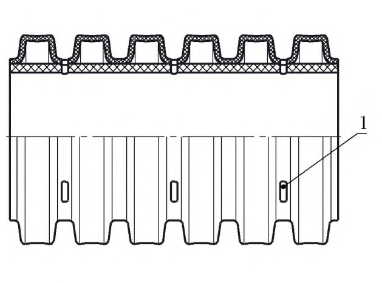
б
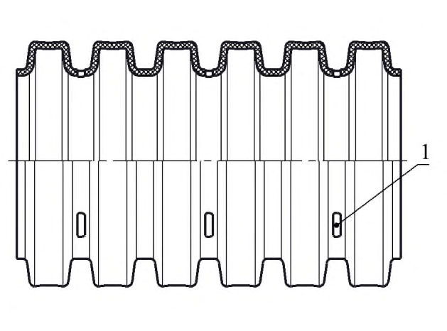
- водоприемное отверстие
Рисунок 5.1 - Расположение водоприемных отверстий труб с двухслойной ( а ) и однослойной стенкой ( б ) а
- частичное перфорирование:
- полное перфорирование:
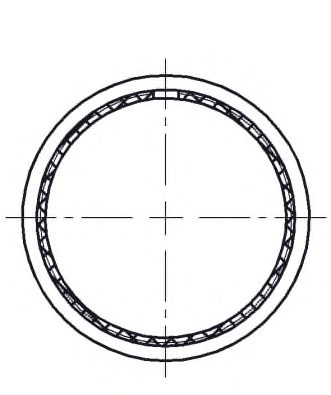
б
- частичное перфорирование:
- полное перфорирование:
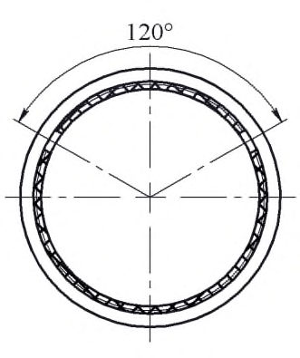
а - для труб DN/OD 110-160 мм; б - для труб DN/OD 200-630 мм и DN/ID 200-600 мм Рисунок 5.2 - Варианты перфорирования труб
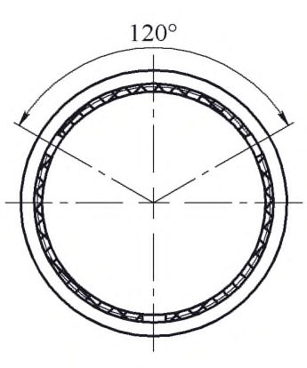
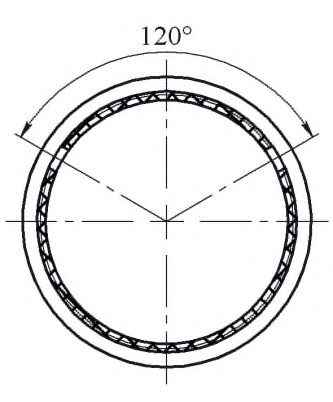
повышенной инсоляцией (значение суммарной годовой солнечной радиации на горизонтальную поверхность более 1716 кВт∙ч/м² ) по СП 131.13330, а также при строительстве трубопроводов в обваловании.
- механическим способом;
- с помощью сварки;
- склеиванием.
- в раструб с помощью уплотнительного кольца;
- компрессионный, когда соединение осуществляется обжатием детали по наружной поверхности трубы;
- резьбовой;
- фланцевый.
- с трубными концами - сварные или изготовленные методом литья под давлением, изгибанием, прессованием, намоткой с последующей механической обработкой или механической обработкой трубных заготовок;
- с раструбными концами, изготовленные методом литья под давлением, прессованием или другим промышленным способом;
- со встроенными ЗН, изготовленные методом литья под давлением или другим промышленным способом.
где PN т - величина PN труб, из которых изготовлены сварные соединительные детали; f - коэффициент снижения давления, принимаемый:
- 0,8 - для сварных отводов с углом поворота больше 15°;
- 0,6 - для сварных тройников.
Для сварных соединительных деталей с углом реза не более 7,5° или усилением толщины стенки в зоне сварных швов, выполненным путем намотки в заводских условиях, f = 1,0.
- с раструбными концами (муфты, отводы, переходы, тройники и заглушки);
- в виде седлового Т-образного отвода, устанавливаемого на наружную поверхность трубы, имеющего один или более ЗН, со встроенным режущим инструментом для вырезки отверстия в трубе. После монтажа инструмент остается в теле детали;
- в виде седлового прямого отвода, устанавливаемого на наружную поверхность трубы, имеющего один или более ЗН, без встроенного режущего инструмента.
- полимерного корпуса, с внешней резьбой и фиксатором, который ограничивает длину вводимого конца трубы;
- уплотнительных колец-прокладок, находящихся в местах соединения для обеспечения герметичности;
- зажимных колец, защищающих соединение от повреждений механического характера и фиксирующих место соединения, не позволяя развинчиваться в непредвиденных ситуациях;
- втулки, запрессовывающей прокладку и препятствующей ее повреждению из-за повышения давления в системе;
- гаек в виде крышек, которые надежно закрывают место соединения за счет внутренней резьбы.
Примечание - Зажимное кольцо и втулка могут быть выполнены в виде монолитной конструкции.
1 - гайка-крышка; 2 - зажимное фальцевое кольцо; 3 - втулка; 4 - уплотнительное кольцо-прокладка; 5 - корпус Рисунок 5.3 - Компрессионная муфта
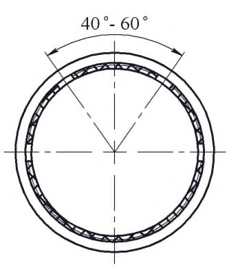
- база (в случае неразъемного цельного колодца база условно заканчивается на расстоянии 300 мм от верхней точки основного канала лотка);
- шахта;
- конус (в зависимости от конструкции);
- телескопический удлинитель колодца (при необходимости);
- люк и приповерхностные элементы конструкции колодца.
Для соединения деталей колодца следует применять:
- соединения с уплотнительным кольцом из эластомера;
- сварные соединения;
- клеевые соединения (для НПВХ);
- механические соединения.
Типовые конструкции и элементы полимерных колодцев представлены на рисунках 5.4-5.10.
1 - шахта-база; 2 - лестница; 3 - уплотнительное кольцо; 4 - конус-переход (горловина); 5 - форма для железобетонной плиты под люк; 6 - люк
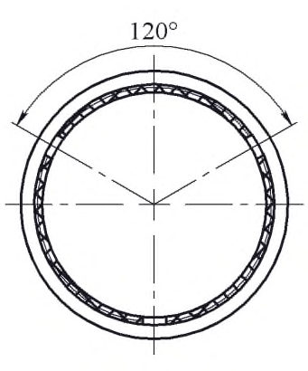
Рисунок 5.4 - Элементы колодца с неразъемной шахтой и базой
1 - база; 2 - шахта; 3 - лестница; 4 - конус-переход (горловина); 5 - форма для железобетонной плиты под люк; 6 - люк
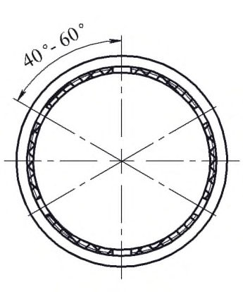
Рисунок 5.5 - Элементы тангенциального колодца
1 - база; 2 - шахта-база; 3 - уплотнительное кольцо; 4 - шахта; 5 - лестница; 6 - уплотнительное кольцо; 7 - конус-переход (горловина); 8 - форма для железобетонной плиты под люк; 9 - люк
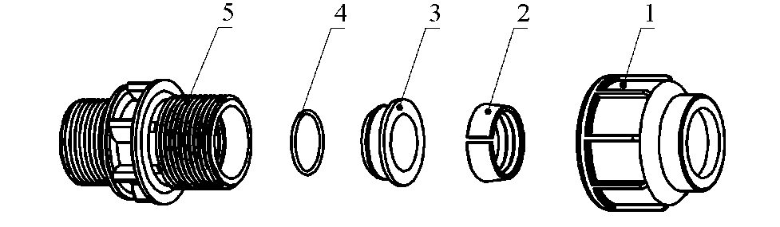
Рисунок 5.6 - Элементы модульного и сварного колодцев
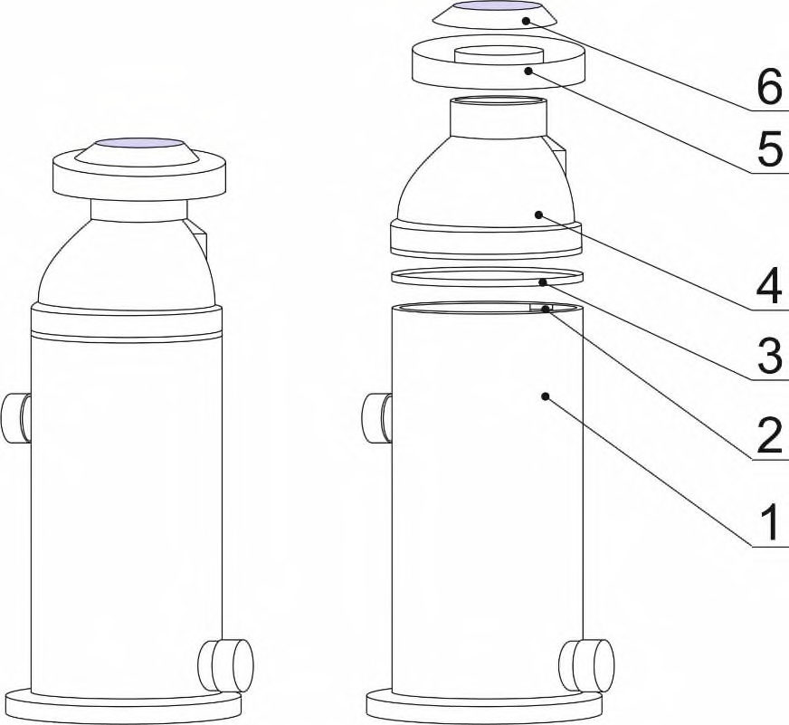
1 - база; 2 - уплотнительное кольцо; 3 - шахта; 4 - телескопический удлинитель колодца; 5 - форма для железобетонной плиты под люк; 6 - люк
Рисунок 5.7 - Элементы модульных инспекционных колодцев
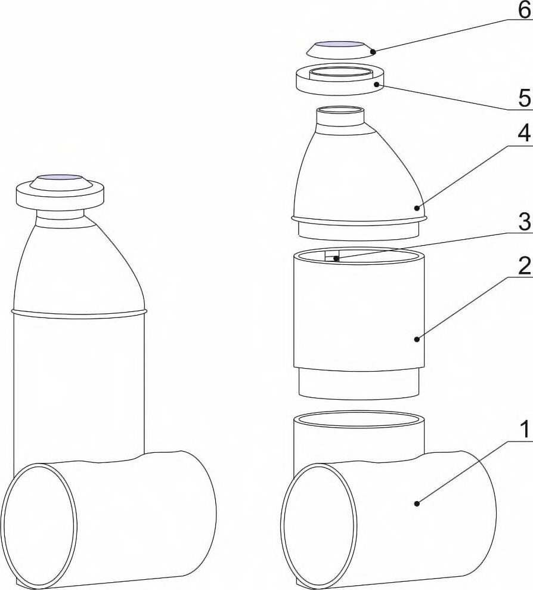
1 - полимерный люк; 2 - резиновая уплотнительная муфта; 3 - база-шахта; 4 - полимерный люк
Рисунок 5.8 - Элементы модульного дренажного колодца
1 - осадочная часть; 2 - шахта-база; 3 - уплотнительное кольцо; 4 - конус-переход (горловина); 5 - форма для железобетонной плиты под прямоугольную решетку; 6 -прямоугольная решетка; 7 - форма для железобетонной плиты под круглую решетку; 8 -круглая решетка
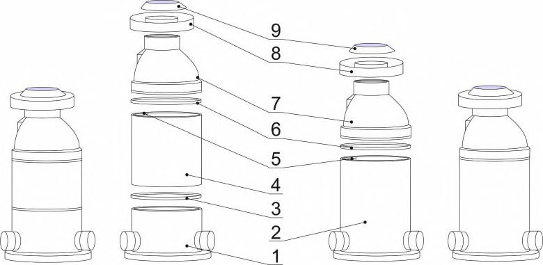
Рисунок 5.9 - Элементы дождеприемных колодцев DN1000
1 - осадочная часть; 2 - шахта-база; 3 - форма для железобетонной плиты под круглую решетку; 4 - круглая решетка; 5 - дорожная плита под прямоугольную решетку; 6 -прямоугольная решетка
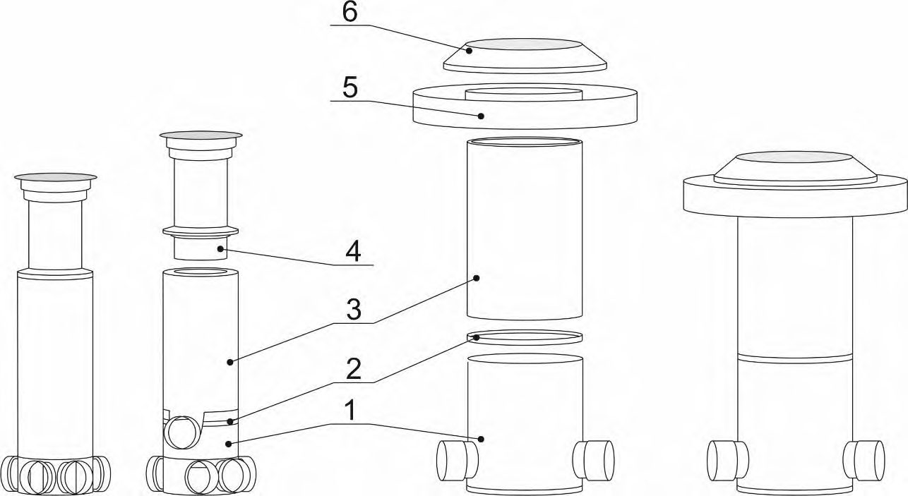
Рисунок 5.10 - Элементы дождеприемных колодцев DN 600
Допускается назначать номинальный размер инспекционного колодца относительно наружного диаметра шахты в форме трубы. Номинальный размер DN/OD выбирают из ряда: DN 200, DN 250, DN 315, DN 400, DN 500, DN 630, DN 800.
Для обеспечения доступа и нахождения внутри колодца обслуживающего персонала диаметр колодца должен быть не менее DN/ID 1000.
Для колодцев, изготовленных по ГОСТ 32972 и предназначенных для доступа к трубопроводу контрольного и очистительного оборудования, обеспечивающих при условии соблюдения необходимых мер безопасности нахождение обслуживающего персонала внутри колодца, допускается принимать диаметр DN/ID 800.
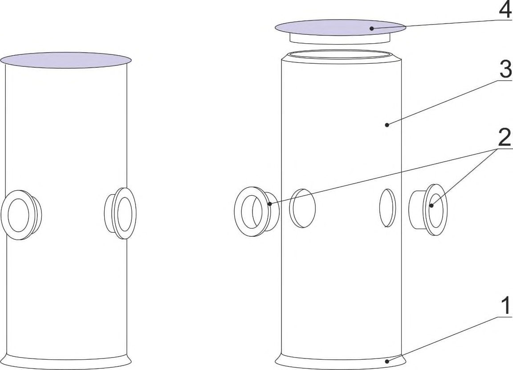
1 - корпус; 2 - шахта обслуживания; 3 - вентиляционная труба; 4 - подводящий патрубок; 5 - патрубок полного слива; 6 - отводящий патрубок; 7 - лестница
Рисунок 5.11 - Емкость хранения воды на технические нужды
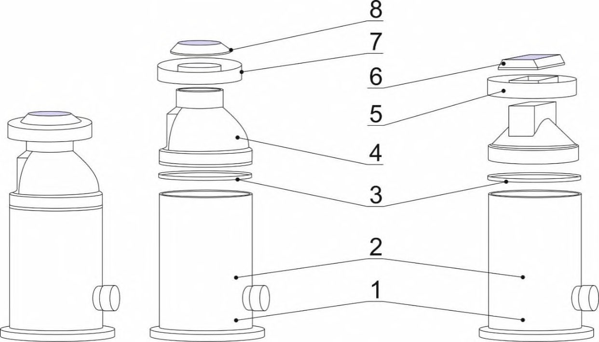
1 - корпус; 2 - вентиляционная труба; 3 - фильтр-поглотитель; 4 - шахта обслуживания; 5 - отводящий патрубок; 6 - подводящий патрубок; 7 - переливной патрубок; 8 - патрубок полного слива; 9 - лестница
Рисунок 5.12 - Емкость хранения воды питьевого качества
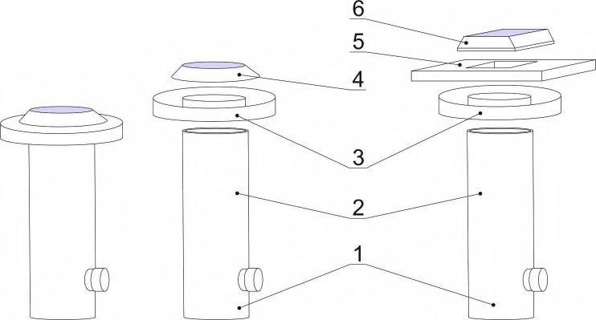
1 - пожарный гидрант; 2 - корпус; 3 - труба вентиляционная, 4 - шахта обслуживания Рисунок 5.13 - Пожарный резервуар
1 - корпус; 2 - коалесцентный блок; 3 - подводящий патрубок; 4 - отводящий патрубок; 5 - шахта обслуживания; 6 - вентиляционная труба; 7 - лестница; 8 - труба откачки осадка Рисунок 5.14 - Маслобензоотделитель
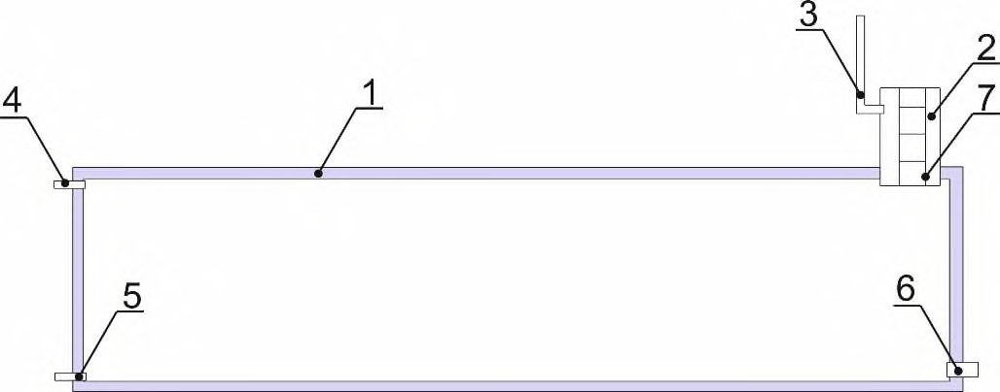
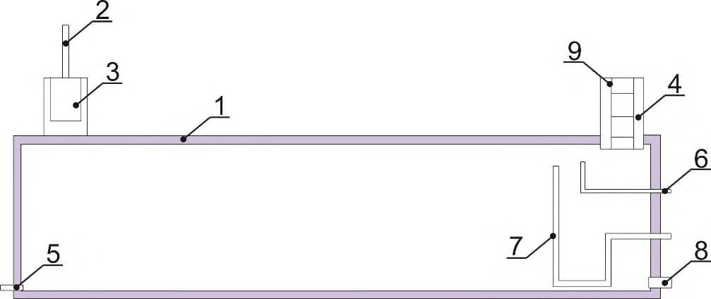
1 - корпус; 2 - шахта обслуживания; 3 - вентиляционная труба; 4 - лестница; 5 -подводящий патрубок; 6 - отводящий патрубок
Рисунок 5.15 - Пескоотделитель
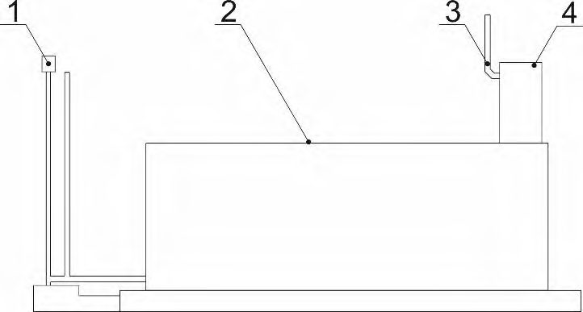
1 - корпус; 2 - подводящий патрубок; 3 - отводящий патрубок; 4 - приемная камера неочищенных стоков; 5 - приемная камера очищенных стоков; 6 - труба распределения потока; 7 - приемные трубы очищенных стоков; 8 - вентиляционная труба; 9 - лестница;
10 - шахта обслуживания
Рисунок 5.16 - Сорбционный фильтр
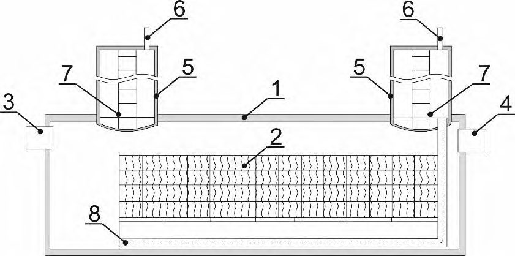
1 - пескоотделитель; 2 - маслобензоотделитель; 3 - сорбционный фильтр; 4 - подводящий патрубок; 5 - отводящий патрубок
Рисунок 5.17 - Составное очистное сооружение
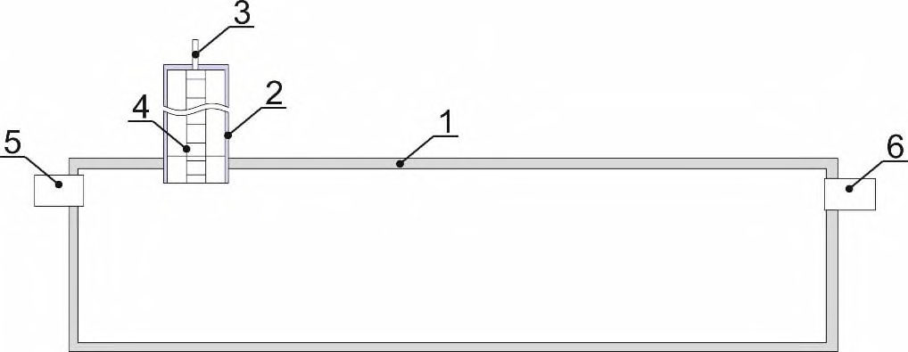
1 - корпус; 2 - шахта обслуживания; 3 - вентиляционная труба; 4 - подводящий патрубок; 5 - отводящий патрубок; 6 - перегородка
Рисунок 5.18 - Жироуловитель
1 - корпус; 2 - крышка; 3 - вентиляционная труба; 4 - лестница; 5 - подводящий патрубок; 6 - отводящий патрубок; 7 - насосное оборудование
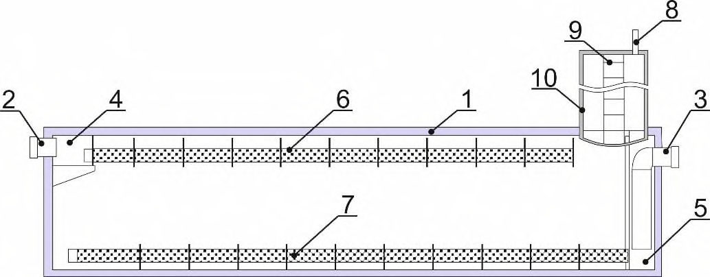
Рисунок 5.19 - Канализационная насосная станция
1 - корпус; 2 - шахта обслуживания; 3 - лестница; 4 - подающий патрубок; 5 - отводящий патрубок; 6 - ультрафиолетовая лампа
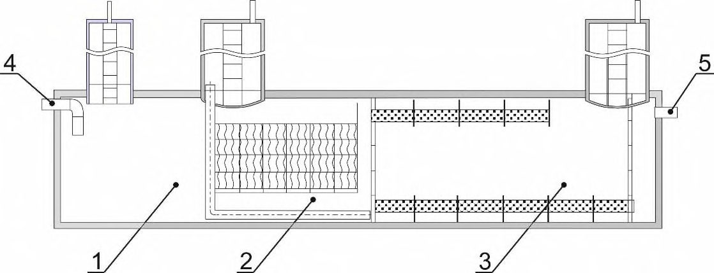
Рисунок 5.20 - Ультрафиолетовый обеззараживатель
5.2Выбор способа прокладки
где Е 0 - модуль упругости полимера при растяжении, МПа;
- D - наружный диаметр труб, м;
- σT - расчетная прочность (предел текучести) для материала труб при растяжении, МПа.
- из тройников и отводов, изготовленных методом литья под давлением;
- сварных соединительных деталей с углом реза не более 7,5° или усилением толщины стенки в зоне сварных швов, выполненным путем намотки в заводских условиях. а б
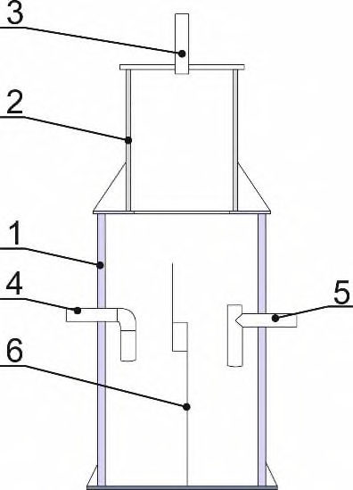
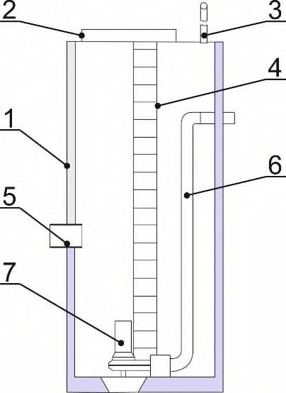
а - трапециевидный для отводов 15°-60 o ; б - треугольный для отводов 90 o ; в - для тройников; L, h - см. 5.2.8.6
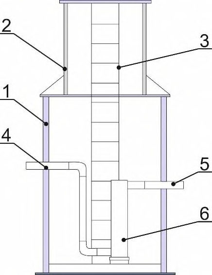
Рисунок 5.21 - Виды упоров для сварных соединительных деталей
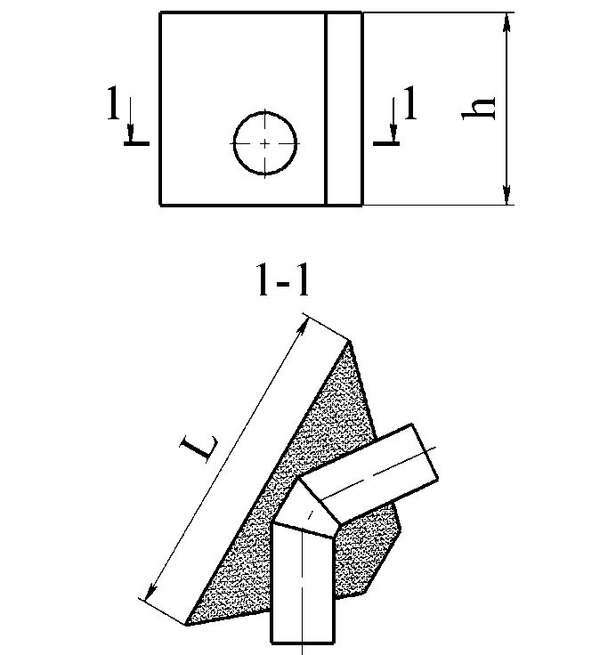
L , R , Rd 1, Rd 2, d 1, d 2 - см. 5.2.8.2, 5.2.8.3, 5.2.8.6
Рисунок 5.22 - Устройство упоров для трубопроводов из НПВХ
- 5.2.8.1 Усилие, действующее на тройник или заглушку, кН, определяют по формуле
где d - наружный диаметр трубы, мм; p m - максимальное давление в трубопроводе, МПа, равное испытательному давлению.
- 5.2.8.2 Осевая сила, действующая на переходной патрубок, кН
где d1 и d2 - наружные диаметры большей и меньшей трубы соответственно, мм.
- 5.2.8.3 Осевая сила, действующая на отвод, кН
где k - угловой коэффициент, принимаемый по таблице 5.1.
Таблица 5.1 Значение углового коэффициента k
| α , град | 11 | 22 | 30 | 45 | 60 | 90 |
|---|---|---|---|---|---|---|
| k | 0,19 | 0,38 | 0,52 | 0,77 | 1,00 | 1,41 |
- 5.2.8.5 Высоту и длину упорного блока можно выбрать исходя из формулы
где σg - допустимое давление на грунт, значение которого, как правило, составляет σg = 200 кН/м² ; β - коэффициент безопасности (принимают β = 1,5).
- 5.2.8.6 После вычисления осевой силы R задают высоту блока h и рассчитывают длину блока L . При выборе высоты блока h и его длины L необходимо придерживаться следующих положений: где α - угол отвода, град.
- 5.2.8.4 Принимают
- длина блока должна быть больше расстояния между стенкой траншеи и соединительной деталью;
- высоту блока следует принимать на 200-400 мм больше, чем диаметр трубопровода, исходя из того, что центр блока будет находиться на уровне оси трубопровода;
- при определении размеров упоров следует также учитывать геометрические параметры соединительных деталей.
Допускается размещать полиэтиленовые, заключенные в футляры трубопроводы, транспортирующие воду питьевого качества, ниже канализационных, при этом расстояние от стенок канализационных труб до обреза футляра должно быть не менее 5 м в каждую сторону в глинистых грунтах и 10 м - в крупнообломочных и песчаных грунтах.
1 - трубопровод; 2 - верхнее полукольцо; 3 - нижнее полукольцо; 4 - узел крепления полуколец; 5 - футеровочный мат Рисунок 5.23 - Железобетонный кольцевой утяжелитель
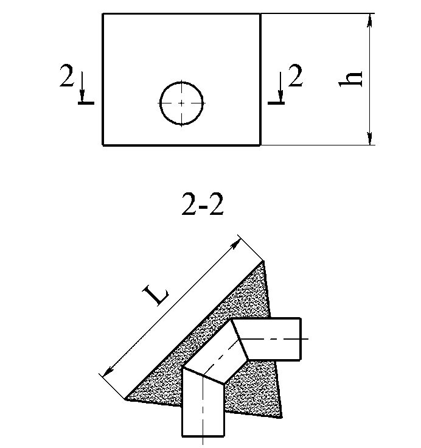
дополнительной защитной оболочкой из термопласта на наружной поверхности трубы.
- вертикальные гасители потока различной конструкции;
- стояки из полимерных труб с направляющим коленом под стояком;
- эксцентрический вход трубопровода и шаровой приемный лоток.
5.3Расчет температурного изменения длины трубопровода
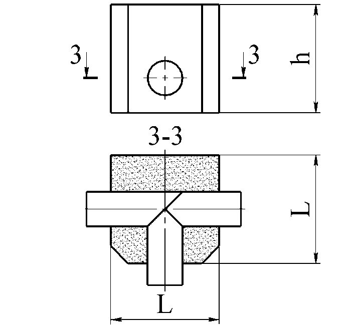
Рисунок 5.24 - Общий вид установки наварных элементов
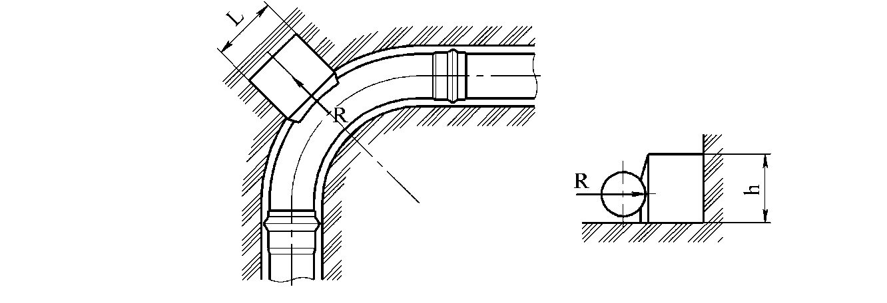
а - два элемента; б - три элемента; в - 4 элемента; г - 5 элементов; д - 6 элементов; е - 8 элементов
Рисунок 5.25 - Варианты расположения наварных элементов по периметру опоры
где α - коэффициент теплового линейного расширения материала трубы, °С -1 , принимается по таблице 2 или справочным данным предприятияизготовителя труб;
- Δ T -разность между максимальной и минимальной температурами трубопровода;
- L - длина трубопровода, м.
Таблица 5.2 -Значения коэффициента теплового линейного расширения материала трубы
| Тип полимерного трубопровода | Значения коэффициента теплового линейного расширения материала трубы, 10 -4 °С -1 |
|---|---|
| ПЭ | 2 |
| НПВХ | 0,7 |
| ПП-Б | 1,5 |
где E 0 - модуль упругости материала трубы, МПа;
F - площадь поперечного сечения стенки трубы, м² .
Температурные напряжения необходимо учитывать в любом закрепленном участке трубопровода при любой длине участка.
где ∆l д - максимально допустимое продольное перемещение трубопровода от действия температуры, которое может быть компенсировано отводом, м;
[σ] - расчетная прочность, МПа;
E 0 - модуль упругости, МПа;
D - наружный диаметр труб, м; l 1 - длина прилегающего к отводу прямого участка трубопровода до подвижной опоры, м;
- r - радиус изгиба отвода, м.
где Δ l - максимально допустимое продольное перемещение трубопровода от действия температуры, которое может быть воспринято компенсатором, м;
[σ] - допускаемое напряжение из условий длительной прочности, МПа; h - вылет компенсатора, м;
D - наружный диаметр трубы, м; r - радиус изгиба отводов компенсатора, м; а - длина прямого участка компенсатора, м.
где L - длина трубопровода, м;
K y - коэффициент уплотнения грунта, принимается равным 1 при степени уплотнения 0,95 и 0,5 - при неконтролируемой степени уплотнения при засыпке траншеи;
- f τ - коэффициент трения материала о грунт, определяемый опытным путем; при отсутствии данных может быть ориентировочно принят равным 0,4; γ - объемный вес грунта, Н/м³ ;
H - глубина заложения трубопровода, м;
E сж - модуль упругости материала в направлении деформации, Па; s - толщина стенки трубопровода, м.
- на схеме трубопроводов намечают места расположения неподвижных опор с учетом компенсации температурных изменений длины труб элементами трубопровода;
- проверяют расчетом компенсирующую способность участков;
- намечают расположение неподвижных опор. В тех случаях, когда температурные изменения длины трубопровода превышают компенсирующую способность его элементов, на нем необходимо установить дополнительный компенсатор, устанавливаемый чаще всего посредине между неподвижными опорами.
5.4Расчет шага между опорами при надземной прокладке трубопровода
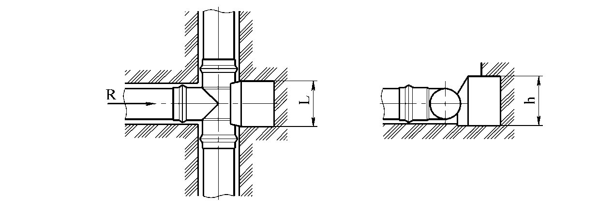
Рисунок 5.26 - Схема хомутовой опоры под трубопровод
где W - момент сопротивления изгибу поперечного сечения трубы, м³ ; 𝑞 - суммарный погонный вес трубы и транспортируемой по нему среды, кН/м; σ𝑧 ∆𝑇 + = - 𝐸𝑇α∆𝑇 + , σ𝑧 ∆𝑇 + = - 𝐸𝑇α∆𝑇 - осевое напряжение в трубе, МПа; σ 𝑡 𝑝 = 𝑝𝐷 2𝑠 - окружное напряжение в стенке трубы, МПа; здесь 𝑝 - внутреннее давление в трубе, МПа;
𝐸𝑇 - долговременный модуль упругости материала трубы, МПа;
∆𝑇+, ∆𝑇 - максимальное увеличение и снижение температуры трубы после монтажа, o C; σT - предел текучести материала трубы, МПа; 𝑛T - коэффициент запаса по текучести;
J - осевой момент инерции поперечного сечения трубы, м 4 ; n y - коэффициент запаса по устойчивости прямолинейной формы равновесия трубы;
- η - допустимое значение прогиба трубы, задаваемое как доля от номинального диаметра 𝐷 .
5.5Гидравлический расчет трубопроводов
где i t - удельные потери напора при температуре воды t, °C (потери напора на единицу длины трубопровода), м/м; l - длина участка трубопровода, м; h м.с - потери напора в соединениях и в местных сопротивлениях, м;
Hсв - требуемый свободный напор у потребителя, м;
Hгеом - геометрическая высота (разница отметок конечной и начальной точек расчетного участка трубопровода), м, определяется по формуле
здесь Zк.т и Zн.т - отметки конечной и начальной точек соответственно расчетного участка трубопровода.
5.6Расчет на прочность, устойчивость и всплытие трубопроводов, колодцев и емкостей
- в определении деформаций полимерного материала в стенке трубы при различных нагрузках и воздействиях на трубопровод;
- проверке соблюдения условий прочности трубопровода в зависимости от его назначения;
- проверке соблюдения условий устойчивости трубопровода в зависимости от его назначения.
Прочность и устойчивость трубопроводов, колодцев и емкостей должны обеспечиваться на всех стадиях жизненного цикла, за исключением стадии ликвидации.
где p раб - рабочее давление в трубопроводе, МПа; pg - давление гидравлического удара, МПа, определяется по формуле
где ρ - плотность транспортируемой жидкости, кг/м³ ;
V - скорость течения транспортируемой жидкости, м/с;
Eov - объемный модуль упругости транспортируемой жидкости, МПа;
D вн - внутренний диаметр трубопровода, м; s - толщина стенки трубы, м;
E τ - долговременный модуль упругости материала труб, МПа.
где Р раз - фактическая величина разряжения в трубопроводе, МПа;
P - допустимая величина разряжения в трубопроводе, МПа.
Значение допустимого разряжения P определяется:
- для труб по ГОСТ 18599, ГОСТ Р 51613, ГОСТ 32415 (класс ХВ) и ГОСТ 32413 по формуле
- для труб по ГОСТ Р 54475 по формуле
где f 0 - коэффициент компенсации овализации (определяется по рисунку 5.27);
Кз
- коэффициент запаса прочности;
Eτ - долговременный модуль упругости материала трубы, МПа; μ - коэффициент Пуассона;
I - момент инерции стенки трубы, м 4 /м;
D ср - средний диаметр с трубы, ( D ср = D вн -s), м.
Рисунок 5.27 - Определение коэффициента компенсации овализации
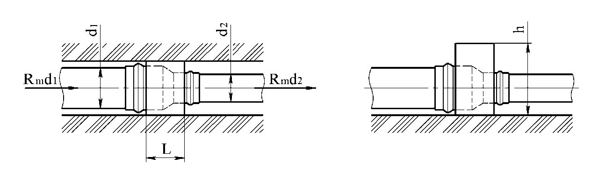
6Монтаж трубопроводов водоснабжения и водоотведения из полимерных материалов
6.1Входной контроль
6.1.2 Входной контроль включает:
- проверку соответствия поступивших изделий номенклатуре, приведенной в проектной документации или заказе на поставку;
- проверку сопроводительных документов, удостоверяющих качество и соответствие маркировке изделий, а также целостности упаковки, предусмотренной изготовителем;
- проверку соответствия нормам показателей внешнего вида, геометрических размеров и других показателей;
- оформление документов о проведении входного контроля продукции, полученной от поставщика, отбор образцов для проверки проводят по ГОСТ 24297;
- продукция, пригодная для выполнения работ должна иметь ярлык соответствия, а для напорных ПЭ труб допускается оформление акта входного контроля (приложение Е).
- при поступлении изделий на склад заказчика (строительной или эксплуатационной организации);
- при поступлении изделий на объект строительства, при этом проверяется целостность изделий и упаковки после транспортирования и соответствие проектной документации;
- перед началом монтажных и (или) сварочных работ.
Определение размеров изделий проводят в соответствии с ГОСТ Р ИСО 3126.
6.2Транспортирование и хранение труб, соединительных деталей, колодцев и емкостей
- напорных из полиэтилена - в соответствии с ГОСТ 18599;
- напорных из НПВХ - в соответствии с ГОСТ 32415 или ГОСТ Р 51613;
- напорных из ПВХ-О - в соответствии с ГОСТ Р 56927;
- безнапорных со структурированной стенкой - в соответствии с ГОСТ Р 54475;
- безнапорных из НПВХ - в соответствии с ГОСТ 32413.
6.3Сварные соединения труб и деталей
- нагретым инструментом встык (сварка встык);
- нагретым инструментом в раструб (сварка в раструб);
- ЗН (с помощью деталей с ЗН);
- экструзионным (экструзионная сварка).
При температуре наружного воздуха вне указанных интервалов сварочные работы необходимо проводить в помещениях или укрытиях
(шатры, палатки и т. п.) с использованием оборудования для обогрева (тепловых пушек, дизельных или электробензиновых пушек, тенов и т.д.), обеспечивающих соблюдение разрешенных температурных интервалов. Перед сваркой следует заглушить торцы труб для предотвращения возможной тяги холодных воздушных потоков через трубу. Место сварки защищают от воздействия атмосферных осадков, песка, пыли и т. п.
6.3.11.1 Внутренний диаметр раструба соединительных деталей должен быть меньше номинального наружного диаметра свариваемой трубы в пределах допуска.
6.3.11.2 Механическую обработку свариваемых поверхностей следует выполнять непосредственно перед сваркой в раструб. На концах труб необходимо снять фаску под углом не менее 15. Механическую обработку свариваемой поверхности трубы следует выполнять согласно требованиям изготовителя соединительной детали.
6.3.11.3 Перед началом сварки необходимо убедиться, что температура нагретого инструмента находится в диапазоне 250 °C-270 °C, а гильза и дорн нагретого инструмента не имеют никаких загрязнений или повреждений.
6.3.11.4 Сварка в раструб включает следующие операции:
- нанесение метки на расстоянии от торца трубы, равном глубине раструба соединительной детали плюс 2 мм;
- установку раструбного конца на дорне;
- установку трубного конца трубы в гильзе;
- нагрев в течение заданного времени свариваемых концов;
- одновременное снятие свариваемых концов с дорна и гильзы;
- соединение свариваемых концов между собой до метки с выдержкой до отверждения оплавленного материала.
Не допускается поворот свариваемых концов относительно друг друга после их сопряжения при сварке. Время выдержки свариваемых изделий до частичного отверждения зависит от применяемого материала.
6.3.12.1 Сварку с помощью деталей с ЗН проводят сварочных аппаратах, соответствующих ГОСТ Р ИСО 12176-2.
6.3.12.2 Сварочные аппараты, не имеющие функцию протоколирования процесса сварки, не допускаются к применению для работы ввиду отсутствия достоверной информации о проведенных сварках в виде их протоколов.
6.3.12.3 Сварку с помощью деталей с ЗН допускается выполнять по инструкциям, утвержденным в установленном порядке, с учетом выполнения требований изготовителей соединительных деталей с ЗН.
6.3.12.4 Процесс сварки соединительных деталей с ЗН номинальным наружным диаметром 280 мм и более может проходить с предварительным прогревом, применением прижимных устройств или разделением зон сварки. Перед началом работ следует проверить соответствие мощности сварочного аппарата параметрам, предусмотренным изготовителем для сварки данного вида соединительных деталей с ЗН.
6.3.12.5 Технологический процесс соединения труб с помощью деталей с ЗН включает:
- подготовку концов труб, включая обрезку концов труб под прямым углом, очистку от загрязнения, разметку, механическую обработку свариваемых поверхностей и их обезжиривание;
- сборку соединения, то есть установку и закрепление концов свариваемых труб в зажимах центрирующего приспособления с одновременной посадкой соединительной детали с ЗН;
- подключение к сварочному аппарату соединительной детали с ЗН;
- сварку, в том числе ввод параметров сварки, нагрев и охлаждение соединения.
6.3.12.6 Перед механической обработкой на концы свариваемых труб на длину не менее 1/2 длины соединительной детали с ЗН наносят метки глубины ее посадки для обозначения зоны обработки. Механическая обработка концов труб заключается в снятии с поверхности размеченного конца трубы слоя материала толщиной не менее 0,2 мм, а также в удалении заусенцев. После механической обработки свариваемые поверхности трубы и соединительной детали с ЗН тщательно обезжиривают путем протирки предназначенными для этих целей составами.
6.3.12.7 Соединительные детали с ЗН, поставляемые изготовителем в индивидуальной герметичной упаковке, вскрываемой непосредственно перед сборкой, обезжириванию не подвергают, если иное не указано в рекомендациях изготовителя.
6.3.12.8 Обезжиривание свариваемых поверхностей перед сваркой проводят чистой ветошью, пропитанной этиловым спиртом с концентрацией не менее, чем 95%, либо с помощью специально предназначенных для этих целей спиртовых салфеток.
При обезжиривании следует избегать попадания грязи с незачищенных поверхностей в зону сварки. В случае применения этилового спирта его количество следует принимать таким образом, чтобы ветошь была слегка влажной.
6.3.12.9 Параметры режимов сварки устанавливают на сварочном аппарате в зависимости от вида соединительной детали с ЗН, вручную или считывая со штрихового кода или магнитной карточки с помощью датчика. После включения аппарата процесс сварки проходит в автоматическом режиме.
6.3.12.10 Приварку к трубам седловых отводов с ЗН проводят в такой последовательности:
- размечают место приварки на трубе;
- поверхность трубы в месте приварки зачищают, а затем обезжиривают;
- привариваемую поверхность седлового отвода с ЗН, если он поставляется изготовителем в герметичной индивидуальной упаковке, не обезжиривают, если иное не указано в документации предприятияизготовителя;
- отвод устанавливают на трубу и прикрепляют к ней с помощью фиксирующего приспособления (позиционера);
- подключают к сварочному аппарату и проводят сварку;
- после охлаждения соединения через патрубок седлового отвода с ЗН проводят краткосрочную опрессовку в целях проверки качества сварного соединения;
- в случае качественного соединения седлового отвода с ЗН с поверхностью трубы проводят фрезерование ее стенки для соединения внутренних полостей отвода и трубы.
6.3.13.1 Сварку труб с ЗН проводят в следующем порядке:
- подготовка труб, включая очистку от возможных загрязнений, снятие защитной пленки с ЗН и обезжиривание;
- устранение возможной овальности труб с помощью механических или гидравлических скругляющих приспособлений;
- подготовку раструба с ЗН и трубного конца (повторное обезжиривание при необходимости);
- стыковка раструба и трубного конца, включая установку стяжного устройства и внутреннего распорного кольца, фиксацию без напряжения соединения свариваемых труб до упора;
- подключение контактов раструба с ЗН к сварочному(ым) аппарату(ам);
- ввод параметров предварительного нагрева;
- контроль параметров предварительного нагрева;
- предварительный нагрев;
- контроль окончания процесса предварительного нагрева;
- ввод основных параметров сварки;
- контроль параметров сварки;
- процесс сварки;
- контроль и запись времени охлаждения.
6.3.13.2 При поступлении труб на площадку следует предварительно провести замеры допусков диаметров раструбов и трубных концов труб. Для облегчения сборки соединения допуск по внутреннему диаметру раструба трубы должен быть больше допуска диаметра трубного конца присоединяемой трубы.
6.3.13.3 Сборку труб проводят соосно друг с другом. При сборке соединения раструб должен быть расположен с учетом обеспечения свободного доступа к выводам ЗН, которые располагают в горизонтальной плоскости. При этом следует обратить внимание, чтобы раструб присоединяемой трубы также обеспечивал горизонтальное расположение выводов ЗН.
6.3.13.4 Стыковка раструба и трубного конца выполняется с применением двух ручных лебедок или стяжных ремней, расположенных на противоположных сторонах от места соединения, чтобы максимально исключить возможность перекоса при сочленении, приводящего к повреждению ЗН, а также для упрощения стыковки труб. Трубный конец должен равномерно и плавно входить в раструб до упора.
6.3.13.5 Для придания жесткости трубному концу в процессе сварки устанавливают внутреннее распорное кольцо, которое должно быть расположено в трубном конце на расстоянии около 20 мм от его торца.
6.3.13.6 Первая труба, с которой начинается монтаж, должна быть надежно закреплена во избежание ее продольного перемещения при стыковке. В процессе сварки труб следует исключить возможность их перемещения (скатывание) путем установки боковых противооткатных конструкций или частичной засыпки.
6.3.13.7 В процессе сварки необходимо следить за работой сварочных аппаратов и не допускать их выключения. В случае прекращения работы одного из сварочных аппаратов следует принудительно остановить остальные аппараты, дождаться полного охлаждения свариваемых концов и повторить процесс сварки.
6.3.13.8 В середине процесса сварки проводят подтяжку стяжного устройства.
6.3.13.9 Распорное кольцо и стяжное устройство удаляют после полного остывания сварного соединения.
К монтажу и сварке наружных систем водоснабжения и канализации из полимерных материалов может быть допущен только обученный персонал. Обучение должно проводиться компетентными организациями, допущенными в установленном порядке органами государственной власти или оператором трубопровода к организации учебных курсов и выдаче идентификационных карт по ГОСТ Р ИСО 12176-3.
Примечание - Оператор трубопровода - организация, осуществляющая строительство или эксплуатацию трубопровода.
Сварочное оборудование должно быть в технически исправном состоянии и иметь свидетельство о ежегодном техническом обслуживании, проводимом исключительно в авторизованных сервисных центрах.
Правила проведения визуальной оценки качества грата после его удаления представлена в приложении И.
По согласованию с заказчиком допускается применять дополнительные методы неразрушающего контроля (рентгеновский радиографический контроль, ультразвуковой контроль, контроль высоким напряжением).
Систематический операционный контроль качества сборки и сварки соединений полимерных труб и монтажа в целом проводится на всем протяжении строительства ответственными лицами строительной организации.
Оценку качества сварного соединения труб с разноцветными соэкструзионными слоями проводят аналогично соединению труб одного цвета.
6.4Комбинированные соединения труб
- подготовка труб, включая очистку от возможных загрязнений, зачистку свариваемых торцов труб по всему периметру, очистку наружной поверхности труб в месте посадки ТУМ, а также внутренней поверхности торцов и обезжиривание;
- устранение возможной овальности труб с помощью механических или гидравлических приспособлений;
- посадка ТУМ на один из торцов трубы;
- стыковка концов свариваемых труб и их фиксация, например с помощью стяжных ремней;
- подготовка сварочного экструдера к работе, в том числе включение, настройка, контроль температуры массы присадочного материала на выходе и горячего воздуха;
- контроль размеров зазоров подготовленных к сварке труб и надежности их фиксации;
- прихватка внешними швами соединяемых концов труб ручным экструдером;
- надвижение, центровка и усадка ТУМ под воздействием пламени пропановой горелки;
- контроль качества усадки ТУМ;
- проварка изнутри зазора между концами соединяемых труб ручным экструдером с предварительным снятием оксидного слоя в местах контакта расплавленного присадочного материала с основным материалом;
- контроль проварки, маркировка соединения с записью времени охлаждения сварного шва.
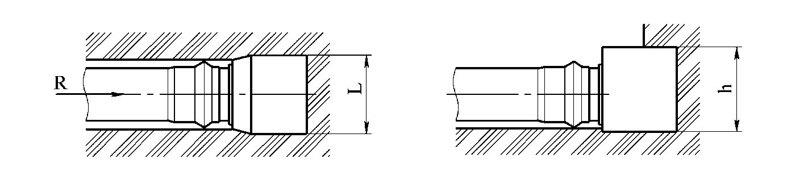
Рисунок 6.2 - Установка ТУМ на соединении по меткам
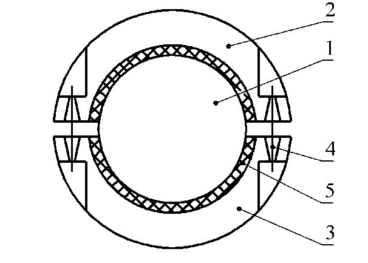
Рисунок 6.3 - Усадка муфты с помощью двух горелок
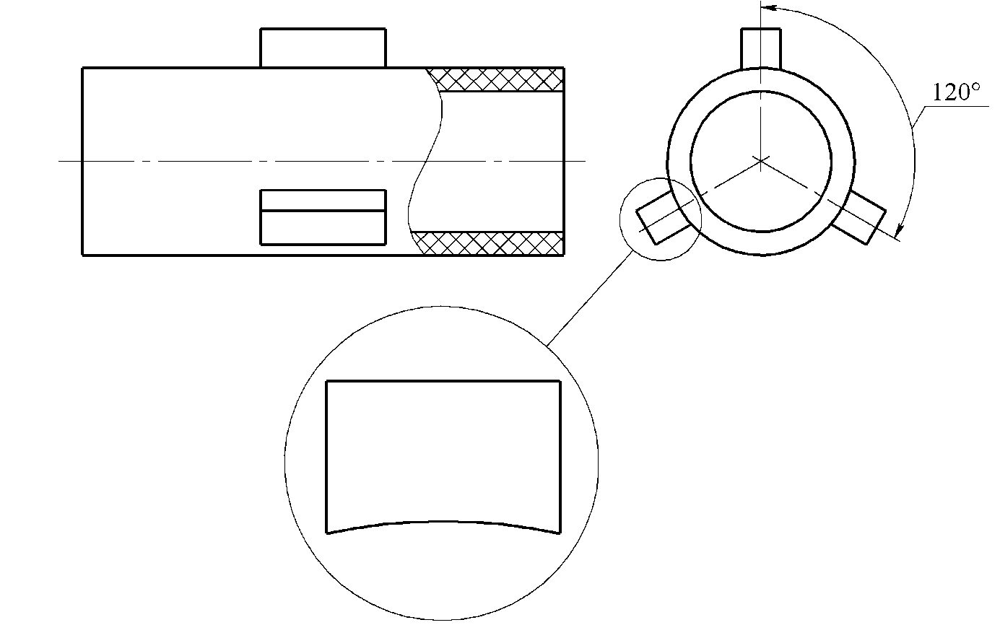
адгезией, стойкостью к сдвиговым деформациям и сопротивлением к отслаиванию.
1 - место первоначальной фиксации ТУЛ; 2 - ТУЛ; 3 - место стыковки ТУЛ Рисунок 6.4 - Схема монтажа ТУЛ на место соединения труб
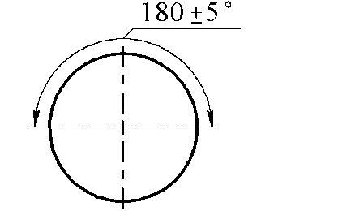
1 - труба; 2 - ТУЛ; 3 - замковая пластина Рисунок 6.5 - Схема крепления замковой пластины
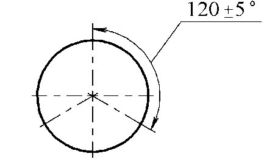
6.5Механические соединения
6.5.2.1 Втулки соединяют с трубами сваркой встык или с помощью муфт с ЗН. При этом применяют сварочные устройства, оснащенные приспособлениями для центровки и закрепления втулок.
6.5.2.2 Сборку и сварку втулок под фланцы с трубами следует проводить в условиях мастерских. При этом втулку приваривают к патрубку длиной не менее 0,6-1,0 м.
6.5.2.3 Перед приваркой готового узла (втулка-патрубок) или отдельной втулки под фланец к трубе на замыкающем участке трубопровода необходимо предварительно надеть на трубу свободный фланец.
6.5.2.4 При сборке фланцевых соединений затяжку болтов проводят поочередно, завинчивая противоположно расположенные гайки тарированным или динамометрическим ключом с усилием, регламентированным технологической картой. Гайки болтов располагают на одной стороне фланцевого соединения.
6.5.3.1 Для исключения разъединения труб размещают раструб навстречу потоку жидкости.
6.5.3.2 Для исключения неравномерной деформации уплотняющего кольца соблюдают соосность составных участков трубопровода таким образом, чтобы искривленность оси была не более толщины стенки трубы на каждый метр длины трубопровода.
6.5.3.3 Для исключения повреждения и перекручивания уплотнительного кольца необходимо применять специальные смазки. Допускается применение смазок, к которым материал труб и уплотнительных колец является химически стойким. Применение смазок, содержащих нефтепродукты, не допускается.
6.5.3.4 Для облегчения монтажа трубопроводов из НПВХ и ПВХ-О после обрезания трубы снимают фаску под углом 15° с трубного конца трубы.
54 6.5.3.5 Перед сборкой трубопровода необходимо очистить от возможных загрязнений уплотнительное кольцо, внутреннюю часть раструба и трубный конец трубы, после чего нанести смазку на трубный конец трубы (соединительной детали). Трубный конец трубы следует поместить в раструб до упора, за исключением труб из НПВХ (в том числе со структурированной стенкой) и ПВХ-О, при соединении которых рекомендуется сохранять зазор в
9-11 мм между трубным концом трубы и упором в раструбе, в целях компенсации изменения длины, возникающей в результате температурных воздействий.
6.5.3.6 Трубные концы соединительных деталей помещают в раструб до упора, за исключением деталей из НПВХ и ПВХ-О, которые размещаются с учетом температурного зазора.
6.5.3.7 Сборку раструбных соединений осуществляют вручную или с использованием монтажных приспособлений. Правильность сборки соединения и установки уплотнительного кольца проверяют щупом толщиной 0,5 мм в четырех диаметрально противоположных точках поперечного сечения трубопровода.
6.5.3.8 Сборку раструбных соединений следует проводить при температуре наружного воздуха не ниже минус 10 o C. Извлекаемые уплотнительные кольца до начала монтажа должны находиться в теплом помещении.
6.5.3.9 Присоединение раструба полимерной трубы к трубному концу чугунной трубы и трубного конца полимерной трубы к раструбу чугунной трубы осуществляется с помощью соединительной детали индивидуальной разработки, изготовленной в заводских условиях.
- закругляют кромки труб, обрезанных под прямым углом;
- ослабляют гайку-крышку на три-четыре витка резьбы, не снимая с соединительной детали; для монтажа трубы диаметром 63-110 мм с овальностью допускается снять гайку и обжимное кольцо;
- вводят трубу в фитинг до внутренних ограничителей (или до упора);
- закручивают гайку-крышку до необходимой степени затяжки. Для труб диаметром 50-110 мм используют компрессионный ключ или аналогичное приспособление для полного затягивания гайки.
6.5.4.1 Для соединения с металлической трубой применяют переходную компрессионную соединительную деталь с резьбой на металлическом конце. Для создания герметичности на резьбу предварительно наматывают ФУМленту. Другой конец соединяют с полиэтиленовой трубой согласно 6.5.4.
- с помощью специальных муфт, внутри которых есть резьба, а труба имеет внешние нарезы. Трубы прикручивают с двух сторон муфты;
- с помощью муфты, имеющей внешнюю резьбу и размещаемой внутри соединяемых труб, имеющих внутреннюю резьбу (ниппельный способ);
- раструбным резьбовым соединением, при котором один конец трубы имеет небольшое расширение - раструб, в котором нарезана резьба, а у другого конца - внешняя резьба;
- резьбовым соединением, при котором один конец трубы имеет наружную резьбу, а другой -внутреннюю, выполненные с местным утонением стенки таким образом, что после свинчивания соединения не происходит местного увеличения наружного или заужения внутреннего диаметров.
6.5.6.1 Трубы свинчивают с помощью самозатяжной петли до полного смыкания торцов. Участок трубопровода, к которому проводят стыковку, фиксируют, исключая возможность проворачивания, продольного или поперечного смещения.
6.5.6.2 После свинчивания труб проводят герметизацию стыков одним из следующих способов:
- с помощью термоусаживающего комплекта, состоящего из ТУЛ и адгезивной ленты;
- с помощью термоусаживающего комплекта и проварки внутреннего стыка ручным экструдером (для труб диаметром свыше 1000 мм);
- методом проварки наружного и внутреннего стыков ручным экструдером (для труб диаметром свыше 1000 мм);
- методом проварки наружного стыка ручным экструдером (для труб диаметром менее 1000 мм).
6.6Склеивание труб
6.7Прокладка трубопроводов
6.7.2 Земляные работы
6.7.2.1 Устройство основания под трубопровод и методы разработки траншеи устанавливают в проекте в зависимости от назначения и диаметра трубопровода, геотехнических характеристик грунтов, рельефа местности и технико-экономических показателей, применяемых механизмов.
При выборе типа основания под трубопровод следует учитывать требования СП 22.13330.
6.7.2.2 В стесненных условиях городской застройки возводят траншеи и котлованы с вертикальными стенками. Для предотвращения обрушения вертикальных стенок необходимо устраивать их временное крепление.
6.7.2.3 Минимальную ширину траншеи с вертикальными стенками принимают не менее наружного диаметра трубопровода (в свету) плюс 0,2 м с каждой стороны, при необходимости передвижения людей в пространстве между трубой и стенкой траншеи - не менее 0,6 м. Допускается ширину траншеи назначать равной диаметру трубопровода плюс 0,05 м, при этом засыпку пространства между трубой и стенкой траншеи следует выполнять песчаным или иным грунтом без каменистых включений без последующего уплотнения, но с обязательным устройством защитного слоя согласно 6.7.2.8.
6.7.2.4 Для сборки соединений трубопроводов в траншеях предусматривают приямки, размеры которых выбирают в зависимости от вида, типа и диаметра прокладываемых труб и обеспечения безопасности при проведении работ.
6.7.2.5 Методы засыпки и уплотнения грунтов засыпки, а также применяемые при этом механизмы определяются проектом и должны обеспечивать сохранность труб, исключая возможность их смещения.
Степень уплотнения грунта устанавливают в зависимости от назначения и диаметра трубопровода.
Схема засыпки траншеи представлена на рисунке 6.6.
6.7.2.6 Подбивку пазух между трубой и дном траншеи выполняют одновременно с двух сторон ручным немеханизированным инструментом.
6.7.2.7 Засыпку свободного пространства между трубой и стенкой траншеи проводят одновременно с двух сторон равными слоями (толщиной от 0,1 до 0,25 м) с уплотнением грунта ручным немеханизированным и (или) механизированным инструментом до степени уплотнения не ниже 0,92. Высота засыпки траншеи должна быть не менее высоты защитного слоя над верхом трубы.
6.7.2.8 При засыпке трубопроводов над верхом трубы обязательно устройство защитного слоя толщиной не менее 0,3 м из песчаного или местного грунта, не содержащего твердых включений (щебня, камней, кирпичей и т. д.). Уплотнение защитного слоя допускается проводить только ручным немеханизированным инструментом со степенью уплотнения не ниже, чем в пазухах траншеи.
6.7.2.9 Засыпку пространства между трубой и стенкой траншеи, устройство защитного слоя грунта, а также их разравнивание проводят вручную и (или) с помощью экскаватора-планировщика. Засыпку нижней части траншеи на высоту 0,25-0,3 м проводят вручную не менее чем на 0,2 м от стенки трубы (за исключением траншей, ширина которых на 0,1 м превышает диаметр трубопровода).
6.7.2.10 При засыпке пространства между трубой и стенкой траншеи и устройстве защитного слоя грунта места соединения трубопроводов оставляют не засыпанными до проведения предварительных испытаний на герметичность.
- 6.7.2.11 Засыпку траншеи поверх защитного слоя допускается осуществлять местным грунтом, не содержащим включений валунов и строительного мусора, в соответствии с требованиями проекта. Засыпку проводят послойно (с толщиной слоев, м: песок - 0,7; супеси и суглинки - 0,6; глины -0,5) экскаваторами-планировщиками, одноковшовыми экскаваторами, бульдозерами с соблюдением максимальной осторожности.
- 6.7.2.12 Участки траншеи с полимерными трубопроводами, пересекающие существующие или проектируемые дороги, следует засыпать на всю глубину песчаным грунтом и уплотнять до степени уплотнения не ниже 0,98.
- 6.7.2.13 Уплотнение грунта при засыпке траншеи поверх защитного слоя проводят с помощью гидромолотов и виброплит массой до 100 кг при высоте слоя засыпки над трубопроводом не менее 0,8 м.
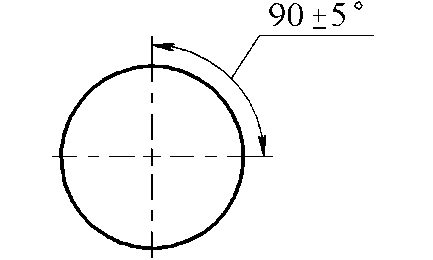
1 - защитный слой грунта (уплотнение допускается проводить только ручным немеханизированным инструментом); 2 - трубопровод; 3 - пазуха между трубой и основанием траншеи, подбивка которой выполняется ручным немеханизированным инструментом; 4 , 5 - слои грунта с уплотнением грунта ручным немеханизированным и (или) механизированным инструментом; 6 - засыпка местным грунтом с уплотнением немеханизированным и/или механизированным инструментом; h 1 1 -hn 1 - толщина слоя засыпки местным грунтом; h 1, h 2, h 3 - толщина слоя засыпки пространства между трубой и стенкой траншеи; h 4 - толщина защитного слоя грунта
Рисунок 6.6 - Схема засыпки траншеи с расположением слоев
6.7.3 Укладка трубопроводов
6.7.3.1 Укладку трубопроводов водоснабжения и водоотведения следует проводить с обязательным учетом местных условий, используя наиболее подходящие технологические схемы:
- на дне траншеи в проектном положении (место стыка должно быть расположено над приямком) и с обязательным закреплением присыпкой грунтом;
- над траншеей на лежнях, располагаемых поперек траншеи на длине всего участка, на котором ведутся укладочные работы, c последующим опусканием собранной части трубопровода в проектное положение и закреплением ее подсыпкой и подбивкой грунтом, при этом лежни постепенно удаляются из-под собранных труб;
- на бровке траншеи (в отдалении от траншеи), с опусканием сваренной трубной плети по стенке на дно траншеи и размещением ее в проектном положении с последующим соединением отдельных трубных плетей между собой монтажными стыками и закреплением трубопровода подсыпкой и подбивкой грунтом.
6.7.3.2 Следует предусматривать опирание трубопровода на плоское основание и один из нижеперечисленных типов подготовки оснований:
- песчаная подготовка толщиной 0,15 м при прокладке трубопроводов в грунтах с расчетным сопротивлением R 0 не менее 0,1 МПа, а также по искусственному основанию;
- втрамбованное в грунт щебеночное основание с устройством песчаной подготовки или искусственное бетонное основание в водонасыщенных грунтах со слабой водоотдачей и с расчетным сопротивлением R 0 не менее 0,1 МПа;
- искусственное железобетонное основание в грунтах с возможной неравномерной осадкой и с расчетным сопротивлением R 0 не менее 0,1 МПа;
- в слабых грунтах с расчетным сопротивлением R 0 менее 0,1 МПа, а также в заболоченных, заиленных, заторфованных грунтах должны быть предусмотрены и осуществлены мероприятия, обеспечивающие несущую способность грунтов, соответствующую расчетному сопротивлению не менее 0,1 МПа (замена грунтов, устройство эстакад и т. п.);
Не требуются устройство песчаной подготовки и замена грунта для трубопроводов из ПЭ 100-RC или имеющих наружный и внутренний соэкструзионные слои из ПЭ 100-RC, которые укладываются непосредственно на выровненное дно траншеи.
6.7.3.3 При прокладке труб в водонасыщенных грунтах с высоким уровнем грунтовых вод следует предусмотреть мероприятия по сбору поверхностного стока, водоотводу и водопонижению. При этом необходимо обеспечить балластировку, т. е. закрепление трубопровода пригрузами (рисунки 6.7-6.13), которые не повреждают трубу, в целях предотвращения его возможного всплытия.
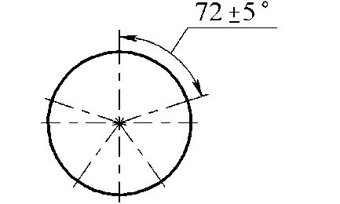
1 - трубопровод; 2 - блок утяжелителя в виде короба; 3 - узел навески силового соединительного пояса; 4 - силовой соединительный пояс Рисунок 6.7 - Железобетонный утяжелитель охватывающего типа с навесными утяжелителями
1 - трубопровод; 2 - приямок в траншее для установки утяжелителя; 3 - шарнирносоединительные плиты; 4 - силовой соединительный пояс; 5 - дно траншеи Рисунок 6.8 - Железобетонный утяжелитель охватывающего типа с шарнирно-соединенными плитами
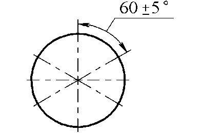
1 - трубопровод; 2 - утяжелитель; 3 - строповочные петли Рисунок 6.9 - Железобетонный утяжелитель клиновидного типа
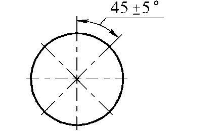
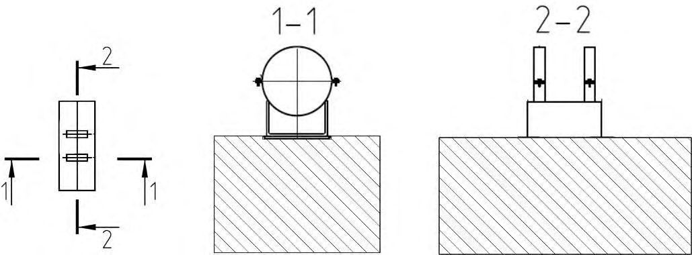
1 - трубопровод; 2 - полотнище из НСМ; 3 - металлический штырь; 4 - грунт засыпки Рисунок 6.10 - Способ балластировки трубопроводов грунтом засыпки с использованием НСМ при прокладке в песчаных грунтах
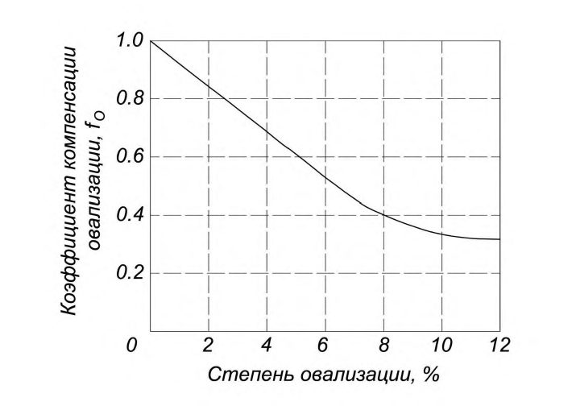
1 - трубопровод; 2 - полотнище из НСМ; 3 - бандаж; 4 - грунт засыпки Рисунок 6.11 - Способ балластировки трубопроводов грунтом засыпки с использованием НСМ при прокладке в глинистых и суглинистых грунтах
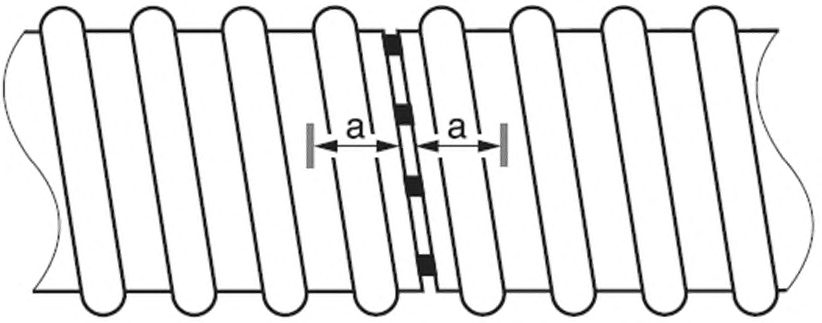
1 - трубопровод; 2 - контейнер из технической ткани; 3 - распорная рамка; 4 - грузовая лента
Рисунок 6.12 - Балластировка трубопровода с помощью двух полимерных контейнеров
1 - трубопровод; 2 - полимерный контейнер; 3 - грунт засыпки Рисунок 6.13 - Балластировка трубопровода с помощью одного полимерного контейнера
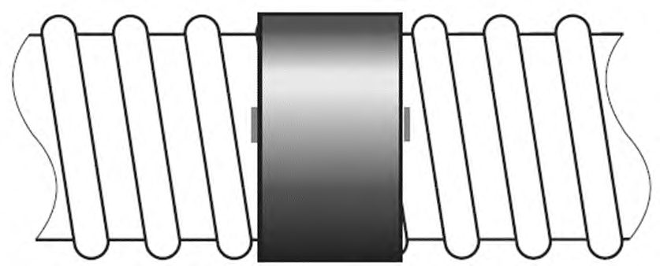
6.7.3.4 При укладке участка безнапорного трубопровода между колодцами необходимо своевременно проверить значение уклона на соответствие проекту. Отклонение уклона от проектного значения не допускается.
Смещение труб в горизонтальной плоскости не должно превышать 0,25 внутреннего диаметра.
6.7.3.5 Монтаж узлов в колодцах проводят одновременно с прокладкой трубопровода или предварительно в заводских условиях. Присоединение трубопроводов к фланцам, запорной и регулирующей арматуре проводят перед засыпкой трубопровода защитным слоем грунта, без затяжки болтов. Окончательную затяжку болтовых соединений выполняют непосредственно перед гидравлическим испытанием системы.
6.7.3.6 Монтаж трубопроводов проводят в летнее время в наиболее холодное время суток, а зимой - в наиболее теплое. Для поддержания стабильности температуры трубопровода в траншее до его засыпки целесообразно применять укрытия из синтетических материалов.
6.7.4 Прокладка трубопроводов бестраншейными методами
6.7.4.1 В случае нецелесообразности устройства напорных трубопроводов открытым способом прокладку следует осуществлять бестраншейными методами (в том числе методом ГНБ) с использованием труб из полиэтилена с соэкструзионными слоями на наружной и (или) внутренней поверхностях трубы либо труб из ПЭ с дополнительной защитной оболочкой из термопласта на наружной поверхности трубы.
6.7.4.2 Строительство трубопроводов методом ГНБ должны выполнять профильные организации, имеющие необходимое оборудование и соответствующий допуск на ведение данных работ, полученный в установленном действующим законодательством Российской Федерации порядке.
6.7.4.3 Работы по бурению выполняют при положительных температурах окружающего воздуха. Работу по прокладке трубопроводов при отрицательных температурах окружающего воздуха следует выполнять круглосуточно при непрерывной работе всех систем. Бурильная установка и резервуары с буровым раствором должны находиться в укрытии с температурой воздуха не ниже 5 °С. Не допускается планировать работы на период, когда возможно понижение температуры до минус 10 °С. При строительстве трубопроводов незначительной длины (до 100 м) и диаметром до 110 мм допускается протаскивание трубопровода с одновременным расширением бурового канала.
6.7.4.4 Напряжения в стенке трубы при ее протаскивании по буровому каналу не должны превышать 50 % σ т .
6.7.4.5 Выбор бурильной установки проводят по результатам расчета общего усилия протаскивания.
6.7.4.6 Соотношения диаметра бурового канала, диаметра трубы и длины трубопровода из полиэтиленовых труб приведены в таблице 6.1.
Таблица 6.1 Соотношение диаметров трубопровода и бурового канала
| Длина трубопровода, м | Диаметр бурового канала |
|---|---|
| До 50 | Минимум 1,2 диаметра трубы |
| 50-100 | Минимум 1,3 диаметра трубы |
| 100-300 | Минимум 1,4 диаметра трубы |
| Свыше 300 | Минимум 1,5 диаметра трубы |
Для твердых почв - сухой глины и плотного слежавшегося песка диаметр бурового канала должен быть минимум 1,5 диаметра трубы.
6.8Исправление дефектных участков при монтаже
- с помощью ремонтных муфт с болтовыми соединениями (с резиновыми уплотнительными вставками);
- с помощью ремонтных муфт с ЗН или накладок с ЗН;
- путем вварки трубной вставки с использованием деталей с ЗН;
- путем замены поврежденной части трубы с использованием трубной вставки и фланцевых соединений.
1 - поврежденный участок; 2 - опора; 3 - трубопровод Рисунок 6.14 - Схема установки опор под концы трубопровода перед вырезкой поврежденного участка
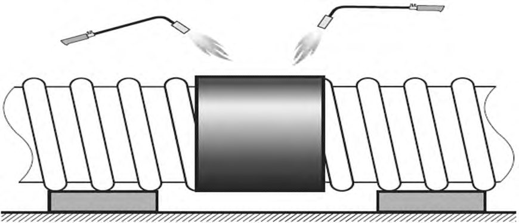
концами трубной вставки не должно превышать ширину холодной зоны деталей с ЗН (рисунок 6.15).
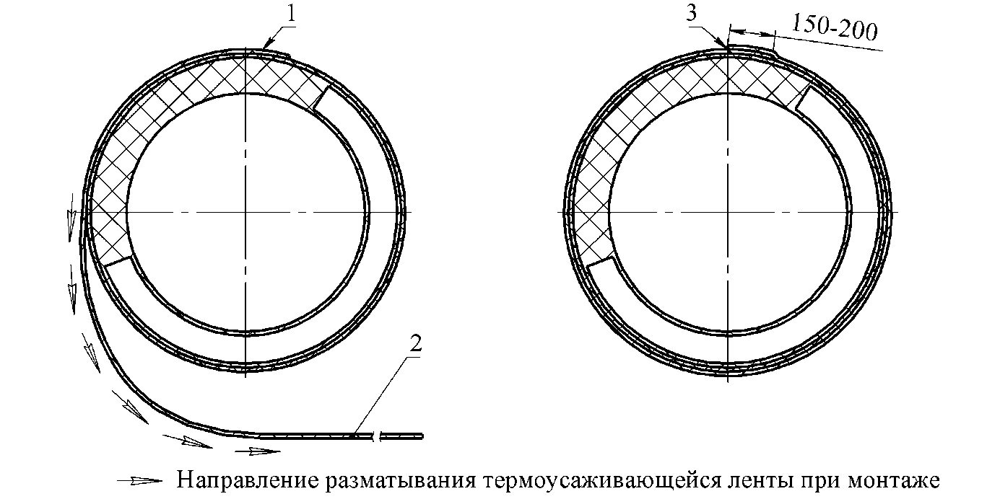
1 - трубопровод; 2 - трубная вставка; 3 - опора
Рисунок 6.15 - Схема расположения трубной вставки между концами трубопровода
1 - муфта; 2 - опора; 3 - трубная вставка; 4 - трубопровод
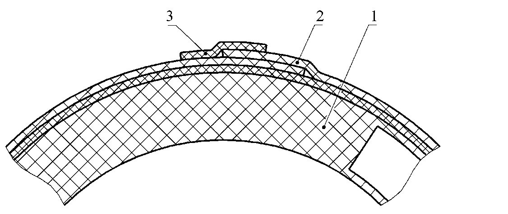
Рисунок 6.16 - Схема установки трубной вставки на опоры с использованием деталей с ЗН
1 - трубная вставка; 2 - опора; 3 - фланец; 4 - трубопровод Рисунок 6.17 - Схема установки трубной вставки на опоры с использованием фланцев
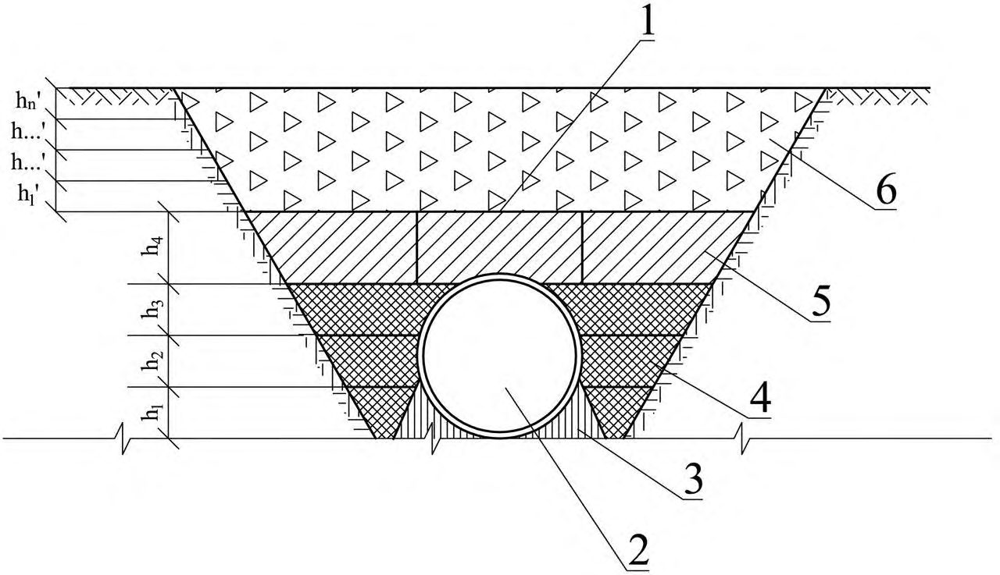
- замена поврежденной части трубы трубной вставкой с герметизацией соединения с помощью ТУМ (рисунок 6.18) или ТУЛ в соответствии с требованиями 6.4; а
а - подготовительные работы: 1 - трубопровод; 2 - опора; 3 - прямолинейный срез; б -монтаж трубной вставки и муфт: 1 - трубопровод; 2 - опора; 3 - ремонтная вставка; 4 -ТУМ; 5 - ручной экструдер; 6 - распорные домкраты; в - обработка термоусаживающися муфт газовой горелкой: 1 - трубопровод; 2 - опора; 3 - газовая горелка
Рисунок 6.18 - Схема установки трубной вставки с герметизацией соединения муфтой
- путем заваривания дефектного места ручным экструдером с одновременным применением ТУЛ или ТУМ (рисунок 6.19). а
в а - обработка дефектного места ручным экструдером: 1 - трубопровод; 2 - опора; 3 -поврежденный участок; 4 - ручной экструдер;
- установка заплатки: б
- трубопровод;
- опора;
- ПЭ заплатка; в - обработка термоусаживаемой ленты газовой горелкой: 1 - трубопровод; 2 - опора; 3 -ТУЛ; 4 - замковое крепление ТУЛ; 5 - газовая горелка
Рисунок 6.19 - Схема исправления дефектного места трубы
7Реконструкция трубопроводов водоснабжения и водоотведения с применением полиэтиленовых труб
При капитальном ремонте трубопроводов водоснабжения и водоотведения прочностные функции выполняет действующий трубопровод, а функция его герметичности восстанавливается в результате протяжки тонкостенных полиэтиленовых труб.
Соотношение наружных диаметров полиэтиленовых труб по ГОСТ 18599 и внутренних диаметров труб из различных материалов приведено в таблице 7.1.
Таблица 7.1 Наружные диаметры полиэтиленовых труб и внутренние диаметры труб из различных материалов
В миллиметрах
| Наруж- ный диаметр труб по ГОСТ | Внутренний диаметр труб | Внутренний диаметр труб | Внутренний диаметр труб | Внутренний диаметр труб | Внутренний диаметр труб |
|---|---|---|---|---|---|
| Наруж- ный диаметр труб по ГОСТ | стальных по ГОСТ 8696 | стальных по ГОСТ 10704 | железо- бетонных по ГОСТ 12586.0 | чугунных по ГОСТ 9583 | керамических по ГОСТ 286 |
| 90 | - | 98* 104* | - | 100 | - |
| 110 | - | - | - | - | - |
| 125 | - | - | - | 125 | - |
| 140 | 149* | 149* | - | 150 | 150 |
| 160 | - | - | - | - | - |
| 180 | - | - | - | - | - |
| 200 | 209* | 209* | - | 200 | 200 |
| 225 | - | - | - | - | - |
| 250 | 263* | 263* | - | 250 | 250 |
| 280 | - | - | - | 300 | 300 |
| 315 | 313** | 313** | - | 350 | - |
| 355 | 365** | 365** | - | - | - |
| 400 | 414** | 414** | - | 400 | 400 |
| 450 | - | - | - | - | 450 |
| 500 | 514*** | 514*** | 500 | 500 | 500 |
| 560 | 614*** | 614*** | 600 | 600 | 550 600 |
| 630 | - | - | - | 700 | - |
|---|---|---|---|---|---|
| 710 | - | 704*** | - | - | - |
| 800 | 804*** | 804*** | 800 | 800 | - |
| 900 | 900 *4 | 900 *4 | - | 900 | - |
| 1000 | 1000 *4 | 1000 *4 | 1000 | 1000 | - |
| 1200 | 1200 *4 | 1200 *4 1300 *4 | 1200 | - | - |
| 1400 | 1400 *4 | 1400 *4 1500 *4 | 1400 | - | - |
| 1600 | 1600 *4 1700 *4 | 1600 *4 | 1600 | - | - |
| 1800 | 1800 *4 | - | - | - | - |
| 2000 | 2000 *4 | - | - | - | - |
- протяжка круглой трубы, при этом диаметр реконструируемого трубопровода уменьшается;
- протяжка предварительно обжатой полиэтиленовой трубы, поперечное сечение которой временно уменьшено и которая способна восстановить свою первоначальную форму, существенно не изменяя диаметр реконструируемого трубопровода;
- протяжка трубы, профилированной горячим способом при изготовлении, способной восстановить свою первоначальную форму под действием пара, существенно не изменяя диаметр реконструируемого трубопровода;
- протяжка трубы, профилированной холодным способом в заводских условиях при изготовлении или непосредственно на объекте, способной восстановить свою первоначальную форму под действием давления воздуха или воды, существенно не изменяя диаметр реконструируемого трубопровода;
- протяжка круглой трубы в коротких отрезках, имеющих на концах наружную или внутреннюю резьбу, позволяющую соединить данные отрезки между собой.
- трубопровод после разрушения остается в земле, а в образовавшуюся полость протягивается новый полиэтиленовый трубопровод;
- старый трубопровод вытягивается из земли с одновременным затягиванием нового полиэтиленового трубопровода. По мере вытягивания старый трубопровод обрезается и утилизируется.
Требования к качеству очистки внутренней полости существующего трубопровода зависят от особенностей применяемой технологии протяжки.
б а
- защита с помощью отрезков полиэтиленовых труб малого диаметра; б - защита с помощью специальных втулок (вставок)
Рисунок 7.1 - Варианты защиты от повреждения полиэтиленовых труб при протяжке
Процесс подачи трубы контролируют с помощью встроенных приборов на лебедке, автоматически измеряющих и регистрирующих тяговое усилие, которое не должно превышать 50 % σ т .
Усилия, создаваемые лебедкой, не должны превышать значения тянущего усилия даже в случае остановки протяжки трубы.
Процесс восстановления первоначальных размеров полиэтиленовой трубы может проходить естественным путем по истечении определенного времени в зависимости от диаметра трубопровода и температуры окружающей среды.
Диаметр полиэтиленовой трубы должен с определенным допуском соответствовать внутреннему диаметру трубопровода, подлежащего реконструкции.
1 - монтажная петля; 2 - клапан и патрубок для подключения шланга для наполнения/опорожнения трубы Д = 50 мм; 3 - клапан и патрубок для подключения шланга от опрессовочного насоса Д = 25 мм; 4 - клапан для впуска/выпуска воздуха при наполнении и опорожнении трубы; 5 - клапан и патрубок для подключения шланга от опрессовочного насоса Д = 25 мм
Рисунок 7.2 - Реверсионный фланец с патрубками для наполнения трубопровода водой и выпуска воздуха
При применении труб, профилированных холодным способом в заводских условиях (сразу после изготовления), их форма сохраняется с помощью стрейч-пленки, а поставка на объект осуществляется на катушках (барабанах).
Процесс восстановления круглой формы труб, профилированных холодным способом в заводских условиях, допускается проводить сжатым воздухом под давлением, значение которого зависит от свойств материала, из которого изготовлена труба и температуры окружающего воздуха. Допускается для труб с SDR 41 применять пережимные устройства вместо концевых деталей.
Для труб, профилированных холодным способом в заводских условиях, оно должно быть не менее 12 ч.
- стандартные соединительные детали, в том числе с ЗН;
- компрессионные специальные детали.
Допускается применение специальных переходов с ЗН для соединения профилированных труб нестандартных размеров с полиэтиленовыми трубами стандартных размеров.
Для присоединения полиэтиленовой профилированной или обжатой трубы к напорному стальному трубопроводу допускается применять неразъемное соединение «сталь-полиэтилен», привариваемое деталью с ЗН к его полиэтиленовой части.
8Испытание трубопроводов водоснабжения и водоотведения из полимерных материалов
- заполнить трубопровод водой и выдержать без давления в течение 2 ч;
- создать в трубопроводе испытательное давление и поддерживать его в течение 0,5 ч;
- снизить испытательное давление до расчетного и провести осмотр трубопровода.
Выдержку трубопровода под рабочим давлением проводят не менее 0,5 ч. Ввиду деформации оболочки трубопровода необходимо поддерживать в трубопроводе испытательное или рабочее давление подкачкой воды до полной стабилизации.
- в трубопроводе следует создать давление, равное расчетному рабочему давлению, и поддерживать его 2 ч; при падении давления на 0,02 МПа проводят подкачку воды;
- поднять давление до уровня испытательного за период не более 10 мин и поддерживать его в течение 2 ч.
- температура окружающего воздуха ниже 0 о С;
- применение воды недопустимо по техническим причинам;
- вода в необходимом количестве отсутствует.
Порядок пневматических испытаний напорных трубопроводов из полимерных материалов и требования безопасности при испытаниях устанавливают проектом.
Примечание - Для полимерных труб установлено значение испытательного давления, равное рабочему давлению, умноженному на коэффициент 1,3.
9Проектирование и строительство трубопроводов водоснабжения и водоотведения из полимерных материалов в особых условиях
- при прокладке на площадках с сейсмичностью до 9 баллов - с учетом требований СП 14.13330;
- при прокладке на подрабатываемых территориях и просадочных грунтах - с учетом требований СП 21.13330;
- при прокладке в многолетнемерзлых грунтах - с учетом требований СП 25.13330.
Трубопроводы подлежат расчету на всплытие в границах горизонта высоких вод 2 % обеспеченности (водные преграды) и максимального уровня грунтовых вод (водонасыщенные грунты).
Конструкция пригрузов должна быть стойкой к агрессивному воздействию грунта и грунтовых вод, исключать возможность повреждения поверхности труб.
10Строительство дренажных трубопроводов из полимерных материалов
- разработка траншеи (при траншейной прокладке);
- соединение труб;
- устройство фильтрующего слоя из мелкого гравия.
10.4Траншейная прокладка дренажных трубопроводов
- ширина траншеи по дну, зависящая от глубины заложения дрены, диаметра трубопровода, ширины ковша экскаватора, должна быть не менее 0,4 м;
- в поперечном сечении траншея может иметь прямоугольное или трапецеидальное очертание. В первом случае стенки траншеи необходимо укрепить с помощью инвентарных щитов, во втором - откосами 1:1;
- при поступлении поверхностных вод в дренажную траншею предусматривают временные водоотводные канавы, лотки или используют откачивание воды с помощью насосов. При поступлении в траншею грунтовых вод с расходом, превышающим 1 л/с, ее необходимо осушать с помощью иглофильтровых водопонижающих или других насосных установок;
- устройство траншейных дренажей всех типов выполняют в сухое время года. При наличии грунтов повышенной влажности, переувлажненных, а также в случае поступления в траншею поверхностных или грунтовых вод работы по устройству дренажей выполняют отдельными захватками с предварительным полным или частичным осушением;
- дно траншеи не должно содержать твердых включений (твердых комков, кирпича, камня и т. д.), которые могут продавить нижний свод уложенной на них трубы.
При прокладке трубопроводов с частичной перфорацией трубы необходимо укладывать дренажными отверстиями вверх.
Размеры в миллиметрах
а б в а - отклонение проектной трассы от фактической при изменении проектного положения колодцев; б - боковое отклонение трассы при сохранении проектного положения колодцев; в - отклонение трассы в вертикальном положении;
1 - фактическая трасса; 2 - проектная трасса
Рисунок 10.1 - Допустимые отклонения дрены от проектного положения
Примеры устройства траншейных дренажей представлены на рисунках 10.2 и 10.3. а
1 - контур траншеи; 2 - местный грунт; 3 - обратная засыпка траншеи разнозернистым песком; 4 - однослойная засыпка мелким щебнем; а - в траншее с вертикальными стенками; б - в траншее с откосами; 5 - трубопровод
Рисунок 10.2 - Схемы устройства траншейного дренажа с однослойной обсыпкой песчано-гравелистым грунтом а б
- обратная засыпка траншеи разнозернистым а - в траншее с вертикальными стенками; б - в траншее с откосами; 1 - контур траншеи; 2 - местный грунт; 3 песком; 4 - фильтр из геотекстиля
Рисунок 10.3 - Схемы устройства траншейного дренажа в оболочке-фильтре из геотекстиля
1 - трубопровод; 2 - гравийная засыпка; 3 - ЗФП; 4 - местный грунт Рисунок 10.4 - Общий вид системы дренажа с ЗФП
10.5Бестраншейная прокладка дренажных трубопроводов
- подготовительные работы, в том числе планировку поверхности земли, устройство временных подъездных путей, доставку труб и других материалов;
- устройство водоприемного коллектора (целесообразно использовать трубы со структурированной стенкой типа B);
- бурение скважин с установкой фильтров, представляющих собой трубы с гладкой внутренней и наружной поверхностью, имеющие щелевую перфорацию и соединяющиеся друг с другом посредством резьбы;
- введение в фильтры дрен, изготовленных из труб с ЗФП.
1 - установка ГНБ; 2 - фильтр (с последующим введением дрен); 3 - планируемый уровень грунтовых вод; 4 - существующий уровень грунтовых вод Рисунок 10.5 - Схема строительства дренажа с помощью ГНБ
10.6Монтаж дренажных трубопроводов
1 - трубы, 2 - уплотнительное кольцо, 3 - муфта Рисунок 10.6
- Схема соединения труб с помощью двухраструбной муфты
Рисунок 10.8 - Установка уплотнительного кольца при помощи двух монтировок
11Требования безопасности и охраны окружающей среды
Непригодные для вторичной переработки отходы подлежать уничтожению в соответствии с санитарными правилами и нормами, предусматривающими порядок накопления, транспортирования, обезвреживания и захоронения производственных отходов.
Температура воспламенения ПЭ не ниже 300 о С, ПП-Б - не ниже 325 о С, а НПВХ и ПВХ-О - не ниже 300 °С.
В случае пожара тушение проводят огнетушащими составами (средствами), двуокисью углерода, пеной, огнетушащими порошками ПФ, распыленной водой со смачивателем, песком, кошмой (противопожарным полотном). Тушить пожар необходимо в изолирующих противогазах любого типа или фильтрующих противогазах марки М и БКФ и в защитных костюмах.
АПриложение А. Методика определения значений удельных потерь напора на единицу длины напорного трубопровода
А.1 Удельные потери напора на единицу длины напорного трубопровода i t , м/м, при температуре воды t, °C, следует определять по формуле
где λ - коэффициент гидравлического сопротивления по длине трубопровода; V - средняя скорость движения воды, м/с; g - ускорение свободного падения, м/с 2 ; d - расчетный (внутренний) диаметр трубопровода, м.
А.2 Коэффициент гидравлического сопротивления λ следует определять по формуле
где b - число подобия режимов течения воды;
Reф - фактическое число Рейнольдса;
К э - коэффициент эквивалентной шероховатости, м (таблица А.1).
Таблица А.1 Значения коэффициента эквивалентной шероховатости К э для труб из полимерных материалов
| Тип полимерного трубопровода | Коэффициент эквивалентной шероховатости К э , мм |
|---|---|
| ПЭ и ПП-Б | 0,014 |
| НПВХ и ПВХ-О | 0,008 |
А.3 Число подобия режимов течения воды b определяют по формуле
(при b > 2 следует принимать b = 2). Фактическое число Рейнольдса Reф определяют по формуле
где ν - коэффициент кинематической вязкости чистой воды, м² /с (таблица А.2) и сточных вод, м² /с (таблица А.3).
Таблица А.2 Значения коэффициента кинематической вязкости чистой воды
| Температура воды, °С | 2 | 3 | 4 | 5 | 6 | 7 | 8 | 9 | 10 | 11 | 12 | 13 |
|---|---|---|---|---|---|---|---|---|---|---|---|---|
| ν, 10 -6 м² /с | 1,67 | 1,62 | 1,57 | 1,52 | 1,47 | 1,43 | 1,39 | 1,35 | 1,31 | 1.27 | 1,24 | 1,21 |
| Температура воды, °С | 14 | 15 | 16 | 17 | 18 | 19 | 20 | 21 | 22 | 23 | 24 | 25 |
| ν, 10 -6 м² /с | 1,18 | 1,15 | 1,12 | 1,09 | 1,06 | 1,03 | 1,01 | 0,98 | 0,96 | 0,94 | 0,92 | 0,90 |
Таблица А.3 Значения коэффициента кинематической вязкости сточных вод
| Температура сточной воды, °С | Коэффициент, ν , 10-6 м² /с, при концентрации взвешенных веществ, мг/л | Коэффициент, ν , 10-6 м² /с, при концентрации взвешенных веществ, мг/л | Коэффициент, ν , 10-6 м² /с, при концентрации взвешенных веществ, мг/л | Коэффициент, ν , 10-6 м² /с, при концентрации взвешенных веществ, мг/л | Коэффициент, ν , 10-6 м² /с, при концентрации взвешенных веществ, мг/л | Коэффициент, ν , 10-6 м² /с, при концентрации взвешенных веществ, мг/л |
|---|---|---|---|---|---|---|
| Температура сточной воды, °С | 100 | 200 | 300 | 400 | 500 | 600 |
| 2 | 2,17 | 2,67 | 3,17 | 3,67 | 4,17 | 4,67 |
| 3 | 1,83 | 2,05 | 2,27 | 2,49 | 2,71 | 2,93 |
| 4 | 1,68 | 1,80 | 1,92 | 2,04 | 2,16 | 2,28 |
| 5 | 1,60 | 1,68 | 1,76 | 1,84 | 1,92 | 2,00 |
| 6 | 1,52 | 1,58 | 1,63 | 1,69 | 1,74 | 1,80 |
| 7 | 1,46 | 1,50 | 1,64 | 1,58 | 1,62 | 1,67 |
| 8 | 1,42 | 1,45 | 1,48 | 1,51 | 1,54 | 1.58 |
| 9 | 1,37 | 1,40 | 1,42 | 1,45 | 1,47 | 1,49 |
| 10 | 1,33 | 1,35 | 1,37 | 1,39 | 1,41 | 1,43 |
| 11 | 1,29 | 1,30 | 1,32 | 1,34 | 1,35 | 1,37 |
| 12 | 1,25 | 1,27 | 1,28 | 1,30 | 1,31 | 1,32 |
| 13 | 1,22 | 1,23 | 1,25 | 1,26 | 1,27 | 1,28 |
| 14 | 1,18 | 1,19 | 1,20 | 1,21 | 1,22 | 1,23 |
| 15 | 1,15 | 1,16 | 1,17 | 1,18 | 1,18 | 1,19 |
| 16 | 1,12 | 1,13 | 1,13 | 1,14 | 1,15 | 1,16 |
| 17 | 1,10 | 1,10 | 1,11 | 1,12 | 1,12 | 1,13 |
| 18 | 1,07 | 1,07 | 1,08 | 1,08 | 1,09 | 1,10 |
| 19 | 1,04 | 1,04 | 1,05 | 1,05 | 1,06 | 1,06 |
| 20 | 1,02 | 1,02 | 1,02 | 1,03 | 1,04 | 1,04 |
| 21 | 1,00 | 1,00 | 1,00 | 1,01 | 1,01 | 1,02 |
| 22 | 0,96 | 0,97 | 0,97 | 0,98 | 0,98 | 0,98 |
| 23 | 0,94 | 0,95 | 0,95 | 0,96 | 0,96 | 0,96 |
| 24 | 0,92 | 0,93 | 0,93 | 0,93 | 0,94 | 0,94 |
| 25 | 0,90 | 0,91 | 0,91 | 0,91 | 0,92 | 0,92 |
А.4 Число Рейнольдса, соответствующее началу квадратичной области гидравлических сопротивлений при турбулентном движении воды, определяют по формуле
БПриложение Б. Методика определения значений гидравлических параметров безнапорных трубопроводов
- Б.1 Уклон безнапорного трубопровода следует определять по формуле
где λ - коэффициент гидравлического сопротивления трубопровода (канала);
V - средняя скорость течения сточной воды, м/с;
- b -безразмерный показатель степени, характеризующий режим турбулентного течения жидкости -переходный ( b < 2) или квадратичный ( b = 2). При b > 2 следует принимать b = 2;
- g - ускорение свободного падения, м/с 2 ;
- R - гидравлический радиус потока, м; принимают по таблице Б.1 в зависимости от наполнения.
- Б.2 Коэффициент гидравлического сопротивления трубопровода (канала) λ следует определять по формуле
где α - эмпирический показатель степени, зависящий от К э, определяемый по формуле
R п - гидравлический радиус потока при полном наполнении трубопровода, м.
- Б.3 Безразмерный показатель степени b , характеризующий режим турбулентного течения жидкости, определяют по формуле
- Б.3.1 Число Рейнольдса, соответствующее началу квадратичной области гидравлических сопротивлений при турбулентном движении воды, определяют по формуле
Б.3.2 Фактическое число Рейнольдса Reф определяют по формуле
где ν - коэффициент кинематической вязкости сточной воды, м² /с. При концентрации взвешенных веществ менее 100 мг/л следует принимать по таблице А.2, в иных случаях - по таблице А.3.
- Б.4 Среднюю скорость течения сточной воды при неполном наполнении трубопровода (канала) определяют по формуле
где V п - средняя скорость течения сточной воды при полном наполнении трубопровода, м/с;
R н , R п - гидравлические радиусы потока при неполном и полном наполнении трубопровода, м. Значение отношения R н / R п может быть принято в зависимости от наполнения по таблице Б.1.
- Б.5 Расход сточных вод определяют по формуле
где ω - живое сечение потока сточных вод при данном наполнении трубопровода, м² .
Живое сечение потока сточных вод в зависимости от наполнения трубопровода может быть определено по формуле
где K ω принимают согласно таблице Б.1.
Таблица Б.1 Значения гидравлических параметров трубопровода в зависимости от наполнения
| Наполнение трубопровода h / d | Значение гидравлического радиуса потока R | Отношение гидравлических радиусов R н / R п | K ω |
|---|---|---|---|
| 0,1 | 0,0635 | 0,2540 | 0,0409 |
| 0,2 | 0,1206 | 0,4824 | 0,1118 |
| 0,3 | 0,1709 | 0,6836 | 0,1982 |
| 0,4 | 0,2142 | 0,8568 | 0,2934 |
| 0,5 | 0,2500 | 1,0000 | 0,3927 |
| 0,6 | 0,2776 | 1,1104 | 0,4920 |
| 0,7 | 0,2962 | 1,1848 | 0,5872 |
| 0,8 | 0,3042 | 1,2168 | 0,6736 |
| 0,9 | 0,2980 | 1,1920 | 0,7445 |
| 1,0 | 0,2500 | 1,0000 | 0,7854 |
ВПриложение В. Методика прочностного расчета трубопроводов
- В.1 Прочностной расчет трубопроводов из полимерных материалов сводится к выполнению неравенства:
- для напорных трубопроводов
- для безнапорных трубопроводов
- для дренажных трубопроводов
где ε - деформация материала стенки трубы от внутреннего давления в трубопроводе и воздействия внешних нагрузок на трубопровод;
- ε p - максимальная деформация растяжения материала в стенке трубы из-за овальности поперечного сечения трубы под действием грунтов и транспортных нагрузок;
- ε p . p - предельно допустимая деформация растяжения материала в стенке трубы, происходящей в условиях релаксации напряжений;
- ε p . п - предельно допустимая деформация растяжения материала в стенке трубы в условиях ползучести.
- В.2 Значение εp может быть определено по формуле
где ψ - относительное укорочение вертикального диаметра трубы в грунте, устанавливается как предельно допустимое значение
где ψгр - относительное укорочение вертикального диаметра трубы под действием грунтовой нагрузки; ψ τ - то же, под действием транспортных нагрузок;
- ψ м -относительное укорочение вертикального диаметра трубы, образовавшееся в процессе складирования, транспортирования и монтажа, приближенно принимаемое по таблице В.1.
Таблица В.1 Определение относительного укорочения диаметра трубы
| G оболочек трубы, | ψ м при степени уплотнения грунта | ψ м при степени уплотнения грунта | ψ м при степени уплотнения грунта |
|---|---|---|---|
| 0 Па | до 0,85 | 0,85-0,95 | более 0,95 |
| До 276 000 | 0,06 | 0,04 | 0,03 |
| 276 000-290 000 | 0,04 | 0,03 | 0,02 |
| Больше 290 000 | 0,02 | 0,02 | 0,01 |
где Е гр - модуль деформации грунта в пазухах траншеи, МПа;
здесь γ - удельный вес грунта, кН/м³ ;
Н тр - глубина засыпки трубопровода, считая от поверхности земли до уровня горизонтального диаметра, м;
G 0 -кратковременная кольцевая жесткость оболочки трубы, МПа, определяемая по формуле
здесь Е0 - кратковременный модуль упругости при растяжении материала трубы, МПа; μ - коэффициент Пуассона материала трубы (приведен в нормативных документах);
I - момент инерции сечения гладкой трубы на единицу длины, определяемый по формуле
здесь s - толщина стенки трубы, для профилированных труб определяется эквивалентная толщина стенки трубы
3 . (В.10) s
=
(12 𝐼)
Момент инерции сечения профилированной трубы по теоретической формуле кольцевой жесткости
где SN - кольцевая жесткость трубы, кН/м² ;
D вн - внутренний диаметр трубы, мм.
где q Т - транспортная нагрузка, принимаемая по справочным данным для гусеничного, колесного и другого транспорта, МПа; n - коэффициент, учитывающий глубину заложения трубопровода, при H ˂ 1 n = 0,5, при H ˃ 1 n = 1;
К ок - коэффициент, учитывающий процесс округления овализированной трубы под действием внутреннего давления воды в водопроводе, P , МПа:
где q c - суммарная внешняя нагрузка на трубопровод, МПа:
Для гладких труб деформацию стенки от действия внутреннего и внешнего давления определяют по соотношениям
где E 0 - кратковременное значения модуля упругости при растяжении материала трубы, МПа.
Для безнапорных труб со структурированной стенкой значение наибольшей деформации внутреннего гладкого слоя трубы определяют по формуле
где N и M - интенсивности нормального усилия, Н/мм, и момента, Н/мм, в стенке трубы соответственно; δ - толщина внутреннего гладкого слоя трубы; μ - коэффициент Пуассона.
Вычисление внутренних силовых факторов N , M проводят по формулам
где параметр β = √ 12(1-μ 2 ) Dвн 2 δ 2 4 ; 𝐶𝑖 , 𝑖 = 1,3 ̅̅ ̅ ̅ - постоянные, определяемые по формулам: где 𝑡 ∗ - шаг гофра, мм;
Ω - площадь поперечного сечения гофра, мм² ;
𝐸0г -кратковременный модуль упругости материала внешнего структурированного слоя трубы, МПа; 𝑙 ∗ - ширина выступа гофра, мм;
𝐾i s , 𝑖 = 1,4 ̅̅ ̅ ̅ - функции Крылова, имеющие вид
Предельные деформации стенки трубы определяют по формулам:
где σ 0 - кратковременная расчетная прочность при растяжении материала трубы, МПа;
Eτ -долговременное значения модуля упругости при растяжении материала трубы на конец срока службы эксплуатации, МПа.
Если в результате расчетов значение левой части выражения (В.1) для напорных труб или (В.2) для безнапорных труб, или (В.3) для дренажных труб будет больше 1, то следует повторить расчеты при других характеристиках материала труб или укладки трубопровода.
Далее проверяют устойчивость оболочки трубы против действия сочетания нагрузок - грунтовые q гр , транспортные q т и от грунтовых вод Q гв , а также от возможного возникновения вакуума Q вак в трубопроводе (вакуум может образоваться только в напорном режиме).
Для дренажных сетей применяют выражения:
где H гв - уровень грунтовых вод над верхом трубы, м; γ гв - плотность грунтовых вод, кН/м³ ;
G τ -длительная кольцевая жесткость оболочки трубы, МПа, определяемая по формуле
Таблица В.2 Определение коэффициентов для прочностного расчета
| Наименование коэффициента | Обозначение | Значение коэффициента |
|---|---|---|
| Коэффициент запаса, учитывающий вид перфорации в стенках трубы | К з.д | При круговом отверстии в гладкостенной трубе - 2,3; щелевом отверстии со скругленными углами (соотношение сторон 8:1, например 25 на 3) - 1,3; для гофрированных труб при перфорации по впадинам допускается принимать коэффициент запаса 1,1; для других условий К з.д принимают по нормативным документам |
| Коэффициент, учитывающий качество уплотнения постели грунта | K σ | При тщательном контроле - 0,75, при периодическом контроле - 1, при отсутствии контроля - 1,5 |
| Коэффициент запаса на овальность поперечного сечения трубы | К зψ | 1,0 - для напорных и самотечных трубопроводов и 2 - для дренажных трубопроводов |
| Коэффициент, учитывающий запаздывание овализации сечения трубы во времени | К τ | Допускается принимать значения от 1 до 1,5. Рекомендуемое значение для расчетов - 1,25 |
| Коэффициент прогиба, учитывающий качество подготовки ложа и уплотнения | К w | При тщательном контроле - 0,09, при периодическом контроле - 0,11, при отсутствии контроля - 0,13 |
| Коэффициент, учитывающий влияние грунта засыпки на овализацию трубы | К гр | Допускается принимать равным 0,06 |
|---|---|---|
| Коэффициент, учитывающий влияние кольцевой жесткости на овализацию трубы | K ж | Допускается принимать равным 0,15 |
| Коэффициент уплотнения грунта | К у | Рекомендуется принимать не менее 0,92. При значении К у ≥ 0,95 в расчетах допускается принимать 1 |
| Коэффициент, учитывающий процесс округления овализованной трубы под действием внутреннего давления в трубопроводе | K ок | Для безнапорных трубопроводов равен 1 |
| Коэффициент запаса | K з | Приведен в нормативных документах |
| Коэффициент, учитывающий влияние засыпки грунта на устойчивость оболочки | K у.г | Допускается принимать 0,5, а для соотношения Q гв / q Т - равным 0,07 |
| Коэффициент, учитывающий овальность поперечного сечения трубопровода | K ов | При 0 ≤ ψ ≤ 0,05 K ов = 1 - 0,7ψ |
| Коэффициент запаса на устойчивость оболочки к действию внешних нагрузок | К з.у | Допускается принимать равным 3 |
| Коэффициент, учитывающий глубину заложения трубопровода до верха трубы | n | При Н < 1 n = 0,5, при Н > 1 м n = 1 |
Таблица В.3 Характеристика грунтов засыпки пазух траншеи
| Категория грунта | Наименование грунта | Удельный вес грунта γ гр , кН/м³ | Модуль деформации грунта засыпки Е гр , МПа при степени уплотнения | Модуль деформации грунта засыпки Е гр , МПа при степени уплотнения | Модуль деформации грунта засыпки Е гр , МПа при степени уплотнения | Модуль деформации грунта засыпки Е гр , МПа при степени уплотнения |
|---|---|---|---|---|---|---|
| 0,85 | 0,92 | 0,95 | 0,98 | |||
| Г-I | Гравелистые пески, крупные и средней крупности | 17 | 5 | 8 | 16 | 26 |
| Г-II | Мелкие пески | 17,5 | 3,5 | 6 | 12 | 18 |
| Г-III | Пылеватые пески, супеси | 18 | 2,5 | 5 | 7,5 | 10 |
| Г-IV | Полутвердые, тугомягкие и текучепластичные суглинки | 18 | 2 | 3,5 | 5,5 | 8 |
| Г-V | Твердые супеси и суглинки | 18,5 | 1,5 | 2,5 | 5 | 7,5 |
| Г-VI | Глины | 19 | 0,9 | 1,2 | 2,5 | 3,5 |
где γ в - объемный вес воды; hв - уровень грунтовых вод, с учетом горловины.
ГПриложение Г. Методика прочностного расчета колодцев
- Г.1 Прочностной расчет колодцев из полимерных материалов сводится к выполнению неравенства
где Ks - коэффициент запаса по нагрузке от веса грунта, принимают равным 1,2;
- Kw -коэффициент запаса по нагрузке от давления грунтовых вод, принимают равным 1,1;
Kg - коэффициент запаса по нагрузке от транспорта, принимают равным 1; R - радиус шахты колодца;
- S - толщина стенки шахты колодца; m - коэффициент условий работы колодца принимают в диапазоне 0,8-1; σ т - предел текучести материала колодца.
Данное неравенство должно быть справедливым как для низа шахты, так и для верха.
Г.2Расчет низа шахты
Расчет активного горизонтального давления грунта
где h - высота шахты колодца; γгр - объемный вес грунта засыпки; τ n - коэффициент нормального бокового давления грунта, можно принимать равным от 0,3 до 0,8.
Определение давления от транспорта
где gм - нагрузка от транспорта.
Определение длины участка воздействия транспортной нагрузки
где h1 - высота горловины;
Q - угол наклона плоскости скольжения грунта к вертикали
где φ - угол внутреннего трения грунта засыпки.
Определение ширины участка воздействия транспортной нагрузки
Определение давления от грунтовых вод
Г.3Расчет верха шахты
Расчет активного горизонтального давления грунта
где h 1 - высота горловины; γгр - объемный вес грунта засыпки; τ n - коэффициент нормального бокового давления грунта.
Определение давления от транспорта
где q т - транспортная нагрузка, принимаемая по справочным данным для гусеничного, колесного и другого транспорта, МПа.
Определение длины участка воздействия транспортной нагрузки
где h 1 - высота горловины;
Q - угол наклона плоскости скольжения грунта к вертикали.
Определение ширины участка воздействия транспортной нагрузки
Определение давления от грунтовых вод
где γ в - объемный вес воды; h в1 - уровень грунтовых вод, без учета горловины.
ДПриложение Д. Методика расчета на всплытие трубопроводов, колодцев и емкостей
Д.1Расчет трубопровода на всплытие
Расчет трубопровода на всплытие сводится к выполнению неравенства:
где F гр - сила давления грунта, H;
F вт - сила от массы трубы, H;
F А - сила всплытия трубы (сила Архимеда), H.
D , E , H , h - см. формулы (Д.2) и (Д.3) Рисунок Д.1 - Расчетная схема
Высоту перекрытия трубы, м, рассчитывают по формуле
где D - наружный диаметр трубы, м;
здесь H - глубина заложения, м;
E - уровень грунтовых вод, м.
Если расчетный К ˃ 1, принимают К = 1. Рассчитываемый коэффициент характеризует процент площади сечения трубы, находящейся ниже зоны грунтовых вод.
Силу давления грунта, Н, рассчитывают по формуле
где γ - удельный вес грунта, т/м³ ; g - ускорение свободного падения, м/c 2 .
Силу всплытия (силу Архимеда), Н ∙ м, рассчитывают по формулам:
- для незаполненных труб
- для заполненных труб
где d - внутренний диаметр трубы, м.
Силу от массы трубы, H·м, рассчитывают по формуле
где m - масса 1 пог. м трубы, кг.
Вывод:
F гр + F вт ≥ F А - трубопровод устойчив;
F гр + F вт < F А - трубопровод всплывет.
Д.2Расчет колодцев на всплытие (в том числе емкостей вертикального исполнения)
Расчет колодцев на всплытие сводится к определению массы якоря mя по формуле
где m я.т - масса якоря теоретическая, кг; k - коэффициент запаса, принимают k = 1,25.
Теоретическую массу якоря определяют по формуле
где F А - сила Архимеда, Н;
F тр - сила трения, Н;
F к - вес колодца, Н;
F пл - вес плиты, Н.
Силу Архимеда рассчитывают по формуле
где ρ - плотность воды кг/м³ ;
D - наружный диаметр, м;
H - высота колодца, погруженная в воду, м.
Силу трения рассчитывают по формуле
где γ - удельный вес грунта, кг/м³ h - глубина колодца, м; α - угол внутреннего трения, град, определяется по таблице Д.1.
Вес колодца рассчитывают по формуле
Вес плиты рассчитывают по формуле
где m о.п - масса опорной плиты.
Таблица Д.1 Углы внутреннего трения
| Нормальный | Водонасыщенный |
|---|---|
| Песок | Песок |
| 35 | 25 |
| Гравий/щебень | Гравий/щебень |
| 45 | 30 |
| Супеси | Супеси |
| 32 | 18 |
| Суглинки | Суглинки |
| 30 | 16 |
| Глина | Глина |
| 25 | 10 |
Д.3Расчет емкостей на всплытие (горизонтальное исполнение)
Расчет емкости на всплытие сводится к выполнению неравенства
где F гр - сила давления грунта, H;
F ве - сила от массы емкости, H;
F А - сила всплытия емкости (сила Архимеда), H.
Рисунок Д.2 - Расчетная схема
Условие устойчивости имеет вид
Высоту перекрытия емкости, м, рассчитывают по формуле
где D - наружный диаметр емкости, м;
здесь H - глубина заложения, м;
E - уровень грунтовых вод, м.
Если расчетный К ˃ 1, принимают К = 1. Рассчитываемый коэффициент характеризует процент площади сечения емкости, находящейся ниже зоны грунтовых вод.
Силу давления грунта, Н, рассчитывают по формуле
где γ - удельный вес грунта, т/м³ ; l - длина емкости, м; g - ускорение свободного падения, м/c 2 .
Силу всплытия (силу Архимеда), H·м, рассчитывают по формулам:
- для незаполненных емкостей
- для заполненных емкостей
где d - внутренний диаметр емкости, м.
Силу от массы емкости, H·м, рассчитывают по формуле:
где m - масса 1 пог. м емкости, кг.
Вывод:
F гр + F ве ≥ F А - емкость устойчива;
F гр + F ве < F А - емкость всплывет.
ЕПриложение Е. Форма акта входного контроля напорных полиэтиленовых труб
Акт входного контроля напорных полиэтиленовых труб для водоснабжения и водоотведения
ЖПриложение Ж. Правила транспортирования и хранения труб, соединительных деталей, колодцев и емкостей
Ж.1 Трубы допускается транспортировать любым видом транспорта с закрытым или открытым кузовом (в крытых или открытых вагонах) с основанием, исключающим провисание труб.
Ж.2 При перевозке труб автотранспортом длина свешивающихся с кузова машины или платформы концов труб не должна превышать 1,5 м.
Ж.3 Транспортирование труб плетевозами не допускается.
Ж.4 Трубы и соединительные детали необходимо оберегать от ударов и механических нагрузок, а их поверхности - от нанесения царапин. При транспортировке следует избегать изгиба труб. Особенно осторожно следует обращаться с трубами и деталями при низких температурах.
Ж.5 Упаковку деталей при транспортировании в районах Крайнего Севера проводят в соответствии с требованиями ГОСТ 15846.
Ж.6 Для погрузочно-разгрузочных работ используют автопогрузчики, краны, тельферы, а также другие грузоподъемные механизмы.
Ж.7 Трубы и соединительные детали следует хранить отдельно по партиям, сортаменту, виду материала. Не допускается при хранении смешивать трубы и детали из полиэтилена различных наименований, SDR или SN .
Ж.8 Заглушки, которые предотвращают попадание грязи в трубы, во время хранения не снимают.
Ж.9 Одиночные трубы для хранения связывают в пакеты массой до 3 т. Из пакетов могут быть сформированы блок-пакеты массой до 5 т.
Ж.10 Длинномерные трубы с dn до 160 мм включительно для хранения сматывают в бухты или наматывают на катушки.
Ж.11 Трубы в пакетах должны храниться на чистой, ровной поверхности и снаружи поддерживаться опорами. В целях безопасности высота уложенных пакетов не должна превышать 3 м.
Ж.12 На складе хранения труб и деталей не допускается проведение газоэлектросварочных и других работ, связанных с применением открытого огня.
Ж.13 Для предохранения штабелей труб от раскатывания крайние трубы необходимо подклинивать. С этой целью можно использовать и другие приемы или средства: упоры-ограждения, сборно-разборные стеллажи и т. п.
Ж.14 Высоту штабеля в зависимости от SDR и диаметра труб определяют по таблице Ж.1.
Таблица Ж.1 Нормы складирования труб различных диаметров в отрезках
| мм | SDR | SDR | SDR | SDR |
|---|---|---|---|---|
| d n трубы, | ≤ 11 | 13,6; 17; 17,6 | 21 | ≥ 26 |
| Осень-зима (с октября по апрель) | Осень-зима (с октября по апрель) | Осень-зима (с октября по апрель) | Осень-зима (с октября по апрель) | Осень-зима (с октября по апрель) |
| Высота штабелей, м | Высота штабелей, м | Высота штабелей, м | Высота штабелей, м | Высота штабелей, м |
| ≤225 | 4 | 4 | 3,5 | 3,5 |
| Высота штабелей, рядов труб | Высота штабелей, рядов труб | Высота штабелей, рядов труб | Высота штабелей, рядов труб | Высота штабелей, рядов труб |
| 315 | 12 | 12 | 12 | 8 |
| 355 | 11 | 11 | 10 | 7 |
| 400 | 10 | 10 | 9 | 6 |
| 450 | 9 | 9 | 8 | 5 |
| 500 | 8 | 8 | 7 | 5 |
| 560 | 7 | 7 | 6 | 4 |
| 630 | 6 | 6 | 6 | 4 |
| 710 | 5 | 5 | 5 | 4 |
| 800 | 5 | 5 | 5 | 4 |
| 900 | 4 | 4 | 4 | 3 |
| 1000 | 4 | 4 | 4 | 3 |
| 1200 | 3 | 3 | 3 | 3 |
| 1400 | 3 | 3 | 3 | 2 |
| ≥1600 | 2 | 2 | 2 | 2 |
| Весна-лето (с апреля по июнь) | Весна-лето (с апреля по июнь) | Весна-лето (с апреля по июнь) | Весна-лето (с апреля по июнь) | Весна-лето (с апреля по июнь) |
| Высота штабелей, м | Высота штабелей, м | Высота штабелей, м | Высота штабелей, м | Высота штабелей, м |
| ≤225 | 4 | 3,5 | 2,5 | 2 |
| Высота штабелей, рядов труб | Высота штабелей, рядов труб | Высота штабелей, рядов труб | Высота штабелей, рядов труб | Высота штабелей, рядов труб |
| 315 | 12 | 11 | 8 | 6 |
| 355 | 11 | 10 | 7 | 5 |
| 400 | 10 | 9 | 7 | 5 |
| 450 | 9 | 8 | 6 | 4 |
| 500 | 8 | 8 | 6 | 4 |
| 560 | 7 | 7 | 5 | 3 |
| 630 | 6 | 6 | 5 | 3 |
| 710 | 5 | 5 | 4 | 3 |
| 800 | 5 | 5 | 4 | 3 |
| 900 | 4 | 4 | 3 | 3 |
| 1000 | 4 | 4 | 3 | 3 |
| 1200 | 3 | 3 | 3 | 2 |
| ≥1400 | 2 | 2 | 2 | 2 |
| Лето-осень (с июня по сентябрь) | Лето-осень (с июня по сентябрь) | Лето-осень (с июня по сентябрь) | Лето-осень (с июня по сентябрь) | Лето-осень (с июня по сентябрь) |
| Высота штабелей, м | Высота штабелей, м | Высота штабелей, м | Высота штабелей, м | Высота штабелей, м |
| ≤160 | 4 | 3,4 | 2,4 | 1,6 |
| 180 | 4 | 3,4 | 2,4 | 1,5 |
| 200 | 4 | 3,3 | 2,3 | 1,5 |
| 225 | 4 | 3,3 | 2,2 | 1,5 |
| Высота штабелей, рядов труб | Высота штабелей, рядов труб | Высота штабелей, рядов труб | Высота штабелей, рядов труб | Высота штабелей, рядов труб |
| 315 | 12 | 11 | 8 | 5 |
| 355 | 11 | 9 | 7 | 5 |
| 400 | 10 | 8 | 6 | 5 |
| 450 | 9 | 7 | 5 | 4 |
|---|---|---|---|---|
| 500 | 8 | 7 | 5 | 4 |
| 560 | 7 | 6 | 5 | 3 |
| 630 | 6 | 6 | 5 | 3 |
| 710 | 5 | 5 | 4 | 3 |
| 800 | 5 | 5 | 4 | 3 |
| 900 | 4 | 4 | 3 | 2 |
| 1000 | 4 | 4 | 3 | 2 |
| 1200 | 3 | 3 | 3 | 2 |
| ≥1400 | 2 | 2 | 2 | 2 |
Ж.15 Трубы при складировании укладывают в «седло» или послойно с прокладками между ярусами (при укладке пакетов). Бухты хранят уложенными в горизонтальном положении.
Ж.16 Высоту штабеля труб со структурированной стенкой в зависимости от типа и диаметра труб определяют по таблице Ж.2.
Таблица Ж.2 Нормы складирования труб со структурированной стенкой
| d n трубы, мм | Тип А с кольцевыми или спиральными полыми секциями | Тип B с кольцевым полым профилем | Тип B со спиральным полым профилем |
|---|---|---|---|
| Высота штабелей, м | Высота штабелей, м | Высота штабелей, м | |
| ≤ 400 | - | 3,5 | - |
| Высота штабелей, рядов труб | Высота штабелей, рядов труб | Высота штабелей, рядов труб | |
| 500 | - | 8 | - |
| 600 | - | 8 | - |
| 630 | - | 8 | - |
| 800 | 5 | 6 | - |
| 1000 | 5 | 6 | - |
| 1200 | 4 | 6 | 3 |
| 1400 | 4 | - | 3 |
| 1500 | 3 | - | 3 |
| 1600 | 3 | - | 3 |
| 1800 | 3 | - | 3 |
| 2000 | 3 | - | 3 |
| 2200 | 3 | - | 3 |
| 2400 | 2 | - | - |
| ≥ 2600 | - | - | 2 |
Ж.17 Катушки хранят в вертикальном положении между специальными опорами. Оборудование склада должно обеспечивать безопасность подъема, перемещения и погрузки.
Ж.18 Соединительные детали хранят в закрытых складских помещениях в условиях, исключающих их деформирование, попадание масел и смазок (укладывают в полиэтиленовые мешки), не ближе 1 м от нагревательных приборов, желательно на стеллажах.
Ж.19 Соединительные детали с ЗН хранят в индивидуальных герметичных полиэтиленовых пакетах до момента их использования.
Ж.20 Соединительные детали с приваренными патрубками для сварки встык и сварные соединительные детали допускается хранить на открытом воздухе при условии защиты от повреждений и воздействия прямых солнечных лучей.
Ж.21 При перевозке колодцев необходимо укладывать их на ровную поверхность транспортных средств и предохранять от острых металлических углов и ребер платформы.
Ж.22 При транспортировании модульных колодцев возможна укладка шахт вдоль фуры, поперек шахт сверху следует укладывать бруски и на них укладывать запаллетированные базы колодцев с вложенными в них конусами
Ж.23 Для предотвращения возникновения овализации шахт колодцев под действием собственного веса при длительном хранении внутри шахты устанавливают деревянные бруски в двух взаимно перпендикулярных плоскостях. Расстояние от торца шахты до первой пары раскосов должно составлять не более 0,3 м.
Ж.24 При проведении погрузки-разгрузки емкостей запрещается проводить захват корпуса емкости и ее комплектующих за патрубки и лестницы. Запрещается подтаскивать (волочить) корпус емкости и ее комплектующих косым натяжением строп.
Ж.25 Укладка корпуса емкости и ее комплектующих при хранении осуществляется на ровные площадки в один ряд. При необходимости допускается использование деревянных призматических прокладок шириной не менее 150 мм, уложенных по всей длине изделия с интервалом не более 1 м. Штабелирование и установка комплектующих емкости одна на другую при хранении не допускаются.
ИПриложение И. Правила проведения визуальной оценки качества грата после его удаления
- И.1 Дополнительная оценка качества выполненного соединения может осуществляться по требованию заказчика или других контролирующих органов.
И.2 Данный метод допускается применять в следующих случаях:
- выполнение пробных и допускных соединений при выборе сварочных процедур и подборе сварочных параметров;
- выполнение нетиповых, сложных сварочных соединений:
- вертикальные швы;
- соединение протяженных участков сваренного трубопровода и укрупненных узлов;
- при невозможности применения роликовых опор;
- при высоком значении давления перемещения;
- при положительном значении давления перемещения (сварка на наклонной площадке, с уклоном к центру сварочной зоны со стороны подвижной каретки центратора);
- в случае нестабильного микроклимата сварочной зоны, а также при проведении сварки при отрицательной температуре окружающего воздуха;
- при использовании сварочных машин:
- с недостаточной жесткостью центратора (например, при больших зазорах между торцами труб после их подготовки, неравномерным образованием первичного грата, различной шириной сварочного грата);
- с нагревателем, имеющим нестабильное температурное поле (неравномерное образование первичного грата, разная ширина сварочного грата);
- с видимой внешней утечкой жидкости из гидравлической системы или ее нестабильной работой;
- при сварке без укрытия в условиях возможного появления пыли, высокой влажности, осадков;
- в случае выявления недостаточной компетентности сварщика;
- в случае выявления значительного отличия по геометрическим размерам сварочного грата выполненных соединений одним сварщиком на одной сварочной машине;
- дефекты формы сварочного грата:
- значения впадины между валиками грата « k » близкое к верхнему или нижнему пределу;
- несоосность сваренных труб;
- наличие одиночных или протяженных пор на поверхности грата (рисунки И.1 и И.2).
Рисунок И.1 - Одиночные поры (механические включения, примеси)
Рисунок И.2 - Протяженные поры
И.3 Сварной шов и снятый грат должны иметь одинаковую маркировку в целях обеспечения их идентификации.
И.4 Следует контролировать правильность срезанного грата для исключения появления сквозных трещин. Неравномерная форма грата указывает на некорректное его удаление или на несовпадение кромок труб более допустимых пределов (рисунок И.3).
1 - линия реза
Рисунок И.3 - Неравномерная форма грата при несовпадении кромок
И.5 Внешний сварочный грат рекомендуется удалять (срезать) после полного охлаждения сварного соединения, используя инструмент по срезке грата, на который не должен наносить какие-либо повреждения телу трубы, а также вызывать появления дефектов на внутренней поверхности срезаемого грата.
Рекомендуется применять инструмент серийного заводского изготовления, имеющий документацию, регламентирующую его применение.
И.6 После удаления грата область всего периметра сварочного шва должна быть визуально осмотрена в целях выявления возможного загрязнения сварочного шва, наличия несплавлений, раковин и трещин (рисунки И.4-И.6). Дефекты в виде несплавлений имеют гладкие, как стекло, поверхности, расположенные как в центре сварочного шва, так и в других его зонах.
Рисунок И.4 - Часть сварочного шва с несплавлением
Рисунок И.5 - Часть сварочного шва с раковиной
Рисунок И.6 - Часть сварочного шва с трещинами
И.7 После визуального осмотра проводят испытание сварочного грата на изгиб с одновременным кручением по всей длине с максимальным шагом 100 мм (рисунок И.7).
Дефектом следует считать расслоение грата на две половинки и наличие гладкой поверхности в месте расслоения.
При повторном появлении дефекта на срезанном грате следующих соединений необходимо остановить сварочные работы до выявления и устранения причин возникновения данных дефектов.
Рисунок И.7 - Испытание грата на изгиб с кручением
И.8 Проверку на изгиб внутренней стороной наружу выполняют при невозможности испытания грата на изгиб с одновременным кручением (рисунок И.8).
Рисунок И.8 - Испытание грата на изгиб внутренней стороной наружу
И.9 Тестирование грата можно выполнить на специальном устройстве, оказывающим механическое воздействие на грат, в целях проверки его целостности. Типовые дефекты грата, выявленные на специальном диагностическом устройстве, представлены на рисунках И.9 и И.10.
Рисунок И.9 - Дефект грата, выявленный на специальном диагностическом устройстве
Рисунок И.10 - Дефект грата, выявленный на специальном диагностическом устройстве
И.10 Виды дефектов, которые можно выявить на снятом грате, приведены в таблице И.1.
Таблица И.1 Описание дефектов на снятом грате и их оценка
| Описание дефекта | Оценка | Рисунок |
|---|---|---|
| Загрязнения сварочного шва, как и внутренней стороны грата | Не допускаются | И.1 |
| Несплавления, любые трещины, расположенные в сварочном шве или грате | Не допускаются | И.4, И.6 |
| Надрезы, трещины, несплавления в подгратовой области | Не допускаются | И.4, И.6 |
| Любые сквозные несплавления грата, выявленные при его испытании на изгиб с одновременным кручением | Не допускаются | И.7 |
| Несплавления на внешней стороне грата, выявленные при его испытании на изгиб с одновременным кручением, несквозного характера | Допускаются, при подтверждении качества выполняемых соединений другими методами | И.7 |
| Несплавления на внутренней стороне грата, выявленные при его тесте на изгиб | Не допускаются | И.8 |
| Дефекты, выявленные специальным диагностическим устройством | Не допускаются | И.9, И.10 |
| Поры, полости, усадочные раковины, расположенные на сварочном шве | Не допускаются | И.1, И.2, И.5 |
| Изменение цвета по центру сварочного шва | Допускается при положительной оценке качества грата | - |
КПриложение К. Форма акта очистки внутренней полости трубопровода
АКТ №\_\_\_\_ очистки внутренней полости трубопровода
«\_\_\_\_\_» \_\_\_\_\_\_\_\_\_ 20\_\_\_\_г.
Комиссия в составе: председателя комиссии:
\_\_\_\_\_\_\_\_\_\_\_\_\_\_\_\_\_\_\_\_\_\_\_\_\_\_\_\_\_\_\_\_\_\_\_\_\_\_\_\_\_\_\_\_\_\_\_\_\_\_\_\_\_\_\_\_\_\_\_\_\_\_\_\_\_\_
(должность, организация, фамилия, инициалы) членов комиссии:
\_\_\_\_\_\_\_\_\_\_\_\_\_\_\_\_\_\_\_\_\_\_\_\_\_\_\_\_\_\_\_\_\_\_\_\_\_\_\_\_\_\_\_\_\_\_\_\_\_\_\_\_\_\_\_\_\_\_\_\_\_\_\_\_\_\_
(должность, организация, фамилия, инициалы)
\_\_\_\_\_\_\_\_\_\_\_\_\_\_\_\_\_\_\_\_\_\_\_\_\_\_\_\_\_\_\_\_\_\_\_\_\_\_\_\_\_\_\_\_\_\_\_\_\_\_\_\_\_\_\_\_\_\_\_\_\_\_\_\_\_\_
\_\_\_\_\_\_\_\_\_
\_\_\_\_\_\_\_\_\_\_\_\_\_\_\_\_\_\_\_\_\_\_\_\_\_\_\_\_\_\_\_\_\_\_\_\_\_\_\_\_\_\_\_\_\_\_\_\_\_\_\_\_\_\_\_\_\_\_\_\_\_\_\_\_\_\_
\_\_\_\_\_\_\_\_\_
Адрес объекта: \_\_\_\_\_\_\_\_\_\_\_\_\_\_\_\_\_\_\_\_\_\_\_\_\_\_\_\_\_\_\_\_\_\_\_\_\_\_\_\_\_\_\_\_\_\_\_\_\_\_\_\_\_\_\_\_\_\_\_\_\_\_\_
Очистка внутренней полости \_\_\_\_\_\_\_\_\_\_\_\_\_\_\_\_\_\_\_\_\_\_\_\_\_\_\_\_\_ трубопровода (материал трубопровода) диаметром \_\_\_\_\_\_ мм была произведена на участке от \_\_\_\_\_\_\_\_\_\_\_\_\_\_\_\_\_\_\_\_ до \_\_\_\_\_\_\_\_\_\_\_\_\_\_\_\_\_\_\_\_\_\_\_\_\_\_\_ общей протяженностью \_\_\_\_\_\_\_\_\_\_\_\_\_\_м. Очистка выполнена \_\_\_\_\_\_\_\_\_\_\_\_\_\_\_\_\_\_\_\_\_\_\_\_\_\_\_\_\_\_\_\_\_\_\_\_\_\_\_\_\_\_\_\_\_\_\_\_\_ (продувкой водовоздушной смесью/протягиванием очистного устройства* гидродинамической прочисткой) в соответствии с требованиями \_\_\_\_\_\_\_\_\_\_\_\_\_\_\_\_\_\_\_\_\_\_\_\_\_\_\_\_\_\_\_\_\_\_\_\_\_\_\_\_\_\_\_\_\_\_\_\_\_\_\_\_\_\_\_\_\_\_\_\_\_\_\_\_\_\_, (указать нормативный документ) проекта организации строительства, проекта производства работ, специальной рабочей инструкции, согласованной и утвержденной «\_\_» \_\_\_\_\_\_\_\_ 20\_\_г.
\_\_\_\_\_\_\_\_\_\_\_\_\_\_\_
* При очистке внутренней полости трубопровода протягиванием очистного устройства необходимо указать тип очистного устройства.
Очистка внутренней полости трубопровода проводилась до выхода
\_\_\_\_\_\_\_\_\_\_\_\_\_\_\_\_\_\_\_\_\_\_\_\_\_\_\_\_\_\_\_\_\_\_\_\_\_\_\_\_\_\_\_\_\_\_\_\_\_\_\_\_\_\_\_\_\_\_\_\_\_\_\_\_\_\_
\_\_\_\_\_\_\_\_\_\_\_\_\_\_\_\_\_\_\_\_\_\_\_\_\_\_\_\_\_\_\_\_\_\_\_\_\_\_\_\_\_\_\_\_\_\_\_\_\_\_\_\_\_\_\_\_\_\_\_\_\_\_\_\_\_\_
[струи незагрязненного воздуха, воды и (или) очистного устройства]
Заключение комиссии:
\_\_\_\_\_\_\_\_\_\_\_\_\_\_\_\_\_\_\_\_\_\_\_\_\_\_\_\_\_\_\_\_\_\_\_\_\_\_\_\_\_\_\_\_\_\_\_\_\_\_\_\_\_\_\_\_\_\_\_\_\_\_\_\_\_\_
\_\_\_\_\_\_\_\_\_\_\_\_\_\_\_\_\_\_\_\_\_\_\_\_\_\_\_\_\_\_\_\_\_\_\_\_\_\_\_\_\_\_\_\_\_\_\_\_\_\_\_\_\_\_\_\_\_\_\_\_\_\_\_\_\_\_
\_\_\_\_\_\_\_\_\_\_\_\_\_\_\_\_\_\_\_\_\_\_\_\_\_\_\_\_\_\_\_\_\_\_\_\_\_\_\_\_\_\_\_\_\_\_\_\_\_\_\_\_\_\_\_\_\_\_\_\_\_\_\_\_\_\_
Акт составил \_\_\_\_\_\_\_\_\_\_\_\_\_\_\_\_\_\_\_\_\_\_\_\_\_ \_\_\_\_\_\_\_\_\_\_\_ \_\_\_\_\_\_\_\_\_ \_\_\_\_\_\_\_\_
(должность) (личная подпись) (инициалы, фамилия)
«\_\_\_\_\_»\_\_\_\_\_\_\_\_\_\_\_\_\_\_\_\_20\_\_\_\_\_г.
Представитель эксплуатационной организации
\_\_\_\_\_\_\_\_\_\_\_\_\_\_\_\_\_\_\_\_\_\_\_\_\_\_\_\_\_ \_\_\_\_\_\_\_\_\_\_\_\_\_\_\_\_\_\_ \_\_\_\_\_\_\_\_\_\_\_\_\_\_\_\_\_\_
(должность) (личная подпись) (инициалы, фамилия)
«\_\_\_\_\_»\_\_\_\_\_\_\_\_\_\_\_\_\_\_\_\_20\_\_\_\_\_г.
Производитель работ
\_\_\_\_\_\_\_\_\_\_\_\_\_\_\_\_\_\_\_\_\_\_\_\_\_\_\_\_\_ \_\_\_\_\_\_\_\_\_\_\_\_\_\_\_\_\_\_ \_\_\_\_\_\_\_\_\_\_\_\_\_\_\_\_\_\_
(должность) (личная подпись) (инициалы, фамилия)
«\_\_\_\_\_»\_\_\_\_\_\_\_\_\_\_\_\_\_\_\_\_20\_\_\_\_г.
ЛПриложение Л. Форма акта проведения работ по телеинспекции участка трубопровода
АКТ №\_\_\_\_
проведения работ по телеинспекции участка трубопровода после реверсии полиэтиленовых труб
Адрес объекта: \_\_\_\_\_\_\_\_\_\_\_\_\_\_\_\_\_\_\_\_\_\_\_\_\_\_\_\_\_\_\_\_\_\_\_\_\_\_\_\_\_\_\_\_\_\_\_\_\_\_\_\_\_
Организация - производитель работ \_\_\_\_\_\_\_\_\_\_\_\_\_\_\_\_\_\_\_\_\_\_\_\_\_\_\_\_\_\_\_\_\_\_\_
Дата обследования «\_\_\_\_»\_\_\_\_\_\_\_\_\_\_\_\_\_\_\_ 20\_\_\_\_г.
Номер участка \_\_\_\_\_\_\_\_\_\_\_\_\_\_\_\_\_\_\_\_\_\_\_\_\_\_\_\_\_\_\_\_\_\_\_\_\_\_\_\_\_\_\_\_\_
Длина участка \_\_\_\_\_\_\_\_\_\_\_\_\_\_\_\_\_\_\_\_\_\_\_\_\_\_\_\_\_\_\_\_\_\_\_\_\_\_\_\_\_\_\_\_\_
Диаметр трубы\_\_\_\_\_\_\_\_\_\_\_\_\_\_\_\_\_\_\_\_\_\_\_\_\_\_\_\_\_\_\_\_\_\_\_\_\_\_\_\_\_\_\_\_\_
Технология протяжки \_\_\_\_\_\_\_\_\_\_\_\_\_\_\_\_\_\_\_\_\_\_\_\_\_\_\_\_\_\_\_\_\_\_\_\_\_\_\_\_\_\_\_\_\_\_
\_\_\_\_\_\_\_\_\_\_\_\_\_\_\_\_\_\_\_\_\_\_\_\_\_\_\_\_\_\_\_\_\_\_\_\_\_\_\_\_\_\_\_\_\_\_\_\_\_\_\_\_\_\_\_\_\_\_\_\_\_\_\_\_\_
В результате обследования были выявлены*/не были выявлены дефекты:
(нужное подчеркнуть)
Приложение: эскиз/фотоматериалы дефектов*
Акт составил
\_\_\_\_\_\_\_\_\_\_\_\_\_\_\_\_\_\_\_\_\_\_\_\_\_\_\_\_\_ \_\_\_\_\_\_\_\_\_\_\_\_\_\_\_\_\_\_ \_\_\_\_\_\_\_\_\_\_\_\_\_\_\_\_\_\_
(должность) (личная подпись) (инициалы, фамилия)
«\_\_\_\_\_»\_\_\_\_\_\_\_\_\_\_\_\_\_\_\_\_20\_\_\_\_\_г.
Производитель работ
\_\_\_\_\_\_\_\_\_\_\_\_\_\_\_\_\_\_\_\_\_\_\_\_\_\_\_\_\_ \_\_\_\_\_\_\_\_\_\_\_\_\_\_\_\_\_\_ \_\_\_\_\_\_\_\_\_\_\_\_\_\_\_\_\_\_
(должность) (личная подпись) (инициалы, фамилия)
«\_\_\_\_\_»\_\_\_\_\_\_\_\_\_\_\_\_\_\_\_\_20\_\_\_\_\_г.
Представитель эксплуатационной организации
\_\_\_\_\_\_\_\_\_\_\_\_\_\_\_\_\_\_\_\_\_\_\_\_\_\_\_\_\_ \_\_\_\_\_\_\_\_\_\_\_\_\_\_\_\_\_\_ \_\_\_\_\_\_\_\_\_\_\_\_\_\_\_\_\_\_
(должность) (личная подпись) (инициалы, фамилия)
«\_\_\_\_\_»\_\_\_\_\_\_\_\_\_\_\_\_\_\_\_\_20\_\_\_\_\_г.
\_\_\_\_\_\_\_\_\_\_\_
*В случае обнаружения дефектов необходимо описать их характер, месторасположение, а также возможность исправления.
Библиография
- [1] Единые санитарно-эпидемиологические и гигиенические требования к продукции (товарам), подлежащей санитарно-эпидемиологическому надзору (контролю). Утверждены решением Комиссии Таможенного союза от 28 мая 2010 г. № 299
- [2] СП 42-101-2003 Общие положения по проектированию и строительству газораспределительных систем из металлических и полиэтиленовых труб